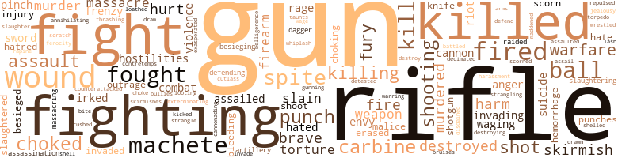
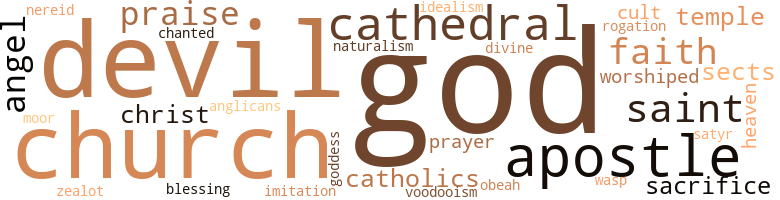

Single Star (The): A Novel of Cuba in the '90s, by Roberts, Walter A. (1949)
104 music-related terms matched in this text.
Most frequent terms in this topic: dance (17); phrases (9); chorus (9); music (9); phrase (7)
belt_out.v.01
Definition: sing loudly and forcefully
| word | sentence |
|---|---|
| belted | His belted tunic had U.S.V. on the collar , proclaiming a volunteer organization , and the brim of his gray felt hat was jauntily pinned up on the left side . |
bombardon.n.02
Definition: a large shawm; the bass member of the shawm family
| word | sentence |
|---|---|
| bombard | The place had not been damaged in the bombard - ment , and the presence of a fair number of customers gave it an air of prosperity . |
chorus.n.01
Definition: any utterance produced simultaneously by a group
| word | sentence |
|---|---|
| chorus | There was a chorus of agreement , which Gerald rounded out . |
| chorus | The larger stars were out , and the chorus of tree frogs and insects had already started . |
| chorus | The engine which had been adjusted began to sputter , and the Lucea backed from the wharf amidst a chorus of friendly shouts . |
| chorus | Stephen and Miguel ate their cold supper in a darkness loud with the insect chorus of the tropical night , risked the smoking of one cigarette despite the telltale glow that could be spotted from so far away , and without further talk threw them - selves down to sleep . |
| chorus | From half-open doors and behind the tilted slats of jalousie windows women chattered a wheedling chorus : " Oiga , cabal - lero ! |
| chorus | The night sounds mingled in a clamant , unceasing chorus : the croaking of toads and geckoes , the clattering of tree frogs , the soft hooting of owls and a vast range of shrilled insect calls . |
| chorus | We 'll take a stab at it , " he said nonchalantly and waved down the chorus of delighted comments that threatened to become too loud for safety . |
| chorus | lie had expected to be challenged , but the woods were silent except for the hooting of owls and the swelling chorus of the tree frogs after dark . |
| chorus | From the nearest anchored ship came the bellowed chorus of a ragtime song , ' There 'll Be a Hot Time in the Old Town Tonight . " |
cornet.n.01
Definition: a brass musical instrument with a brilliant tone; has a narrow tube and a flared bell and is played by means of valves
| word | sentence |
|---|---|
| trumpet | At the first sign of a craft hull down the watchman would blow his abeng , a sort of trumpet made from a cow 's horn , the signal being one light and one strong note repeated twice , which meant , as Dan expressed it , " Colon ship da come ! " |
| trumpet | A sailor put a speaking trumpet to his lips and shouted in Spanish , " What craft is that ? " |
dance.n.01
Definition: an artistic form of nonverbal communication
| word | sentence |
|---|---|
| dance | " There 's to be a dance at Conlon 's River two weeks from now . |
| dance | My mother will call first , and we hope your whole family can attend the dance . " |
| dance | - that I am the only one at home who would be able to go to your dance . |
| dance | " Ten days from now will bring us to the Friday on which the Dempsters plan to hold their dance , " Stephen remarked . |
| dance | " We could n't postpone our sailing for a dance , " said Miguel . |
| dance | By appearing at the dance shortly afterward you confirm the story or at any rate lead a possible spy to suppose that your im - mediate movements are not connected with the ship . |
| dance | Until you 've been at a Jamaican plantation dance of the kind the Dempsters give , you ca n't know what I mean . " |
| dance | " Go to your dance . |
| dance | " The night of the dance at Conlon 's River . |
| dance | Then he and Anthony rode to Conlon 's River , accompanied by a servant who carried the dress clothes into which they would change for the dance . |
| dance | - Charlotte Dugald would have liked him to stay with her for dance after dance and thus announce to the world that their betrothal was as good as settled . |
| dance | - Charlotte Dugald would have liked him to stay with her for dance after dance and thus announce to the world that their betrothal was as good as settled . |
| dance | " The dance is a great treat to me , " said Miguel . |
| dances | In the calm days we held dances of the same order in Cuba . " |
| dance | Wearied by his exertions at the dance and afterward , Miguel crept into the cabin . |
| dance | It was killing two birds with one stone , he added , because he had an important message to give about a dance . |
dance.v.03
Definition: skip, leap, or move up and down or sideways
| word | sentence |
|---|---|
| Dancing | Dancing bored him ; he proposed to have his fun first . |
| danced | She danced extremely well , by an instinct that virtually all Jamaican girls seemed to have . |
| danced | Stephen evaded the snare , danced with the young - est Dempster girl , Laura , who was the prettiest of the lot and terribly precocious , then passed on to waltzes with two sisters from the distant town of Falmouth . |
| dance | Mad girls will dance with them to the end , which will be in broad daylight . |
| danced | Stephen got up and made the best toilet he could , using fresh water from a bottle to wash his face and even giving his chin a sort of shave with a razor that had to be used in gingerly fashion as the sloop danced on the sea . |
| dance | Out in the yard a guitarist was plucking at his strings , and several couples had started to dance to his music . |
guitar.n.01
Definition: a stringed instrument usually having six strings; played by strumming or plucking
| word | sentence |
|---|---|
| guitar | He subtly conveyed the idea that he would prefer to be told about life in Jamaica , to hear the ladies sing , and at the first oppor - tunity to play the guitar for them . |
| guitars | Others clung to heir - looms , sacred images , guitars and caged birds . |
medley.n.01
Definition: a musical composition consisting of a series of songs or other musical pieces from various sources
| word | sentence |
|---|---|
| medley | A high-pitched note of hilarity that was the collective voice of the participants vibrated above the medley of sounds . |
| medley | " I 'll pass on the tip if my luck holds good , " he said , fascinated by the medley of sentiment and realism in her . |
music.n.01
Definition: an artistic form of auditory communication incorporating instrumental or vocal tones in a structured and continuous manner
| word | sentence |
|---|---|
| music | The draw - ing room running the whole width of the house on the south side of the first floor was already crowded , the music being provided by four Negroes : one at the piano , two with fiddles and the last with a drum . |
| music | The rhythm of waltz music , dreamy and regular , suited them better than any other . |
| music | To be sure , most of the excitement could be accounted for by the atmosphere of the ball : the music and the heady perfumes , the unwonted display of feminine shoulders and bosoms . |
| music | They will drink too much and they will reel to the music long after they should stop . |
| music | Out in the yard a guitarist was plucking at his strings , and several couples had started to dance to his music . |
| music | Then he turned a corner and was drawn to a low building by music that was preponderantly African , a music of booming drums and rat - tling gourds . |
| music | Then he turned a corner and was drawn to a low building by music that was preponderantly African , a music of booming drums and rat - tling gourds . |
| music | The yard was choked with humanity , and at the far end of it stood another low structure , from which the music came . |
| music | The moment the last note of the music had sounded Stephen hur - ried from the plaza in the direction of the Campo de Marte . |
musical_instrument.n.01
Definition: any of various devices or contrivances that can be used to produce musical tones or sounds
| word | sentence |
|---|---|
| instruments | Broken surgical instruments that had started to rust constituted the most telltale evi - dence of all . |
| instruments | As a doctor 's daughter , she knew surgical instruments when she saw them . |
passage.n.06
Definition: a short section of a musical composition
| word | sentence |
|---|---|
| passages | So many arc returning , it is difficult to book passages in this direction . |
phrase.n.02
Definition: a short musical passage
| word | sentence |
|---|---|
| phrase | Stephen had been careful to use the phrase " both of you . " |
| phrase | Not for the world would she allow a phrase of love or utter one her - self . |
| phrases | Miguel paused , bit his lip and then shouted an order in swiftly chattered dialect phrases to Perico . |
| phrase | To Stephen the quaint phrase had been clear . |
| phrase | From then on he measured Lcchat 's ardor by the frequency of his catch phrase , " Qa , e ' est mon grand cadeau ! |
| phrases | Mem - ories of his exploits were cited in curt , nostalgic phrases . |
| phrases | These principles he now repealed in cold , curt phrases . |
| phrase | She seldom uttered a phrase without the accompaniment of a hand turned over at the wrist , the stabbing in the air of ardent fingers , the shrug of a shoulder , the darting of eyes , the settling of the head in some eloquent pose , or the throwing out of both arms . |
| phrases | He caught himself attaching more importance to these than to the literal meaning of her phrases . |
| phrases | Bows and inarticulate phrases had been exchanged . |
| phrases | The priest took his stand and launched into the sonorous Latin phrases of the commitment service . |
| phrases | At intervals Stephen had ridden beside Miguel and they had talked in broken , excited phrases ; but he had not tried to give the Cuban any details of events in the city . |
| phrases | They both spoke in earnest , short phrases , welcoming Stephen , lauding his virtues , and voicing their gratitude to him . |
| phrase | The new President , William McKinley , had been elected on a platform which had included a phrase affirming that the United States should " use its active influence to restore peace and give independence " to Cuba . |
| phrases | An inner passion communicated itself through the phrases turned by Charlotte and her emphatic , somewhat sprawling calligraphy . |
| phrase | Over and above the affectionate words of greeting there was a babble of exclamations to which he scarcely listened until Anthony Lloyd summarized them in a phrase . |
piano.n.01
Definition: a keyboard instrument that is played by depressing keys that cause hammers to strike tuned strings and produce sounds
| word | sentence |
|---|---|
| piano | The draw - ing room running the whole width of the house on the south side of the first floor was already crowded , the music being provided by four Negroes : one at the piano , two with fiddles and the last with a drum . |
promenade.n.01
Definition: a formal ball held for a school class toward the end of the academic year
| word | sentence |
|---|---|
| promenade | It was a neglected promenade , dusty and with few shade trees . |
ragtime.n.01
Definition: music with a syncopated melody (usually for the piano)
| word | sentence |
|---|---|
| ragtime | From the nearest anchored ship came the bellowed chorus of a ragtime song , ' There 'll Be a Hot Time in the Old Town Tonight . " |
rap.n.05
Definition: genre of African-American music of the 1980s and 1990s in which rhyming lyrics are chanted to a musical accompaniment; several forms of rap have emerged
| word | sentence |
|---|---|
| rap | Iloratio cared not a rap . |
rhythm.n.04
Definition: the arrangement of spoken words alternating stressed and unstressed elements
| word | sentence |
|---|---|
| rhythm | The rhythm of waltz music , dreamy and regular , suited them better than any other . |
| rhythm | The cannonading steadily gained in intensity , however , and became a dull roar that throbbed to the rhythm of successive salvos linked by a titanic echo . |
scat.n.01
Definition: singing jazz; the singer substitutes nonsense syllables for the words of the song and tries to sound like a musical instrument
| word | sentence |
|---|---|
| scats | Manuela escorted the party into a room that barely had space for a table between two broad cushioned scats fixed to the walls . |
| scat | I watched it from a grandstand scat . " |
score.n.02
Definition: a written form of a musical composition; parts for different instruments appear on separate staves on large pages
| word | sentence |
|---|---|
| score | They had learned nothing in a hundred years since they had flouted the sons of the Americas and had lost their empire as a result , everything save Puerto Rico and this Cuba that was settling the final score . |
| score | Ruffled at not having made a perfect score , he slipped another cartridge into his rifle and shot the remaining target from the wall . |
section.n.01
Definition: a self-contained part of a larger composition (written or musical)
| word | sentence |
|---|---|
| section | It was impossible to tell how many were on duty in the section , but the method of patrolling the line soon became apparent . |
| section | " A Mambí is an inhabitant of freed Cuba , of any section that our army controls , you understand . |
| section | They came presently to another clearing , larger than the first but masked by trees around the edges that formed a canopy over a section of the area . |
| section | The trenches curved around the ad - vanced section of the slope toward the town . |
| section | It was now toward the end of the first week of September , a dry and dusty period in that section of Cuba and one that was subject to violent storms . |
| section | He splashed through a wide though shallow pond in the hollow and went careering up to a section of the crest , where he dug in . |
| section | This section of the road was well within the American lines . |
sing.v.02
Definition: produce tones with the voice
| word | sentence |
|---|---|
| sing | He subtly conveyed the idea that he would prefer to be told about life in Jamaica , to hear the ladies sing , and at the first oppor - tunity to play the guitar for them . |
| sang | In a gay , sweet voice without pretensions , she sang habitant ballads over every task . |
| sing | He missed no op - portunity to sing the praises of this Roosevelt whom he described as being a man of resplendent gifts . |
song.n.01
Definition: a short musical composition with words
| word | sentence |
|---|---|
| song | From the branches of low , wind-bent trees mockingbirds competed in elaborate song . |
| song | Red-tailed hawks wheeled in the blue uttering their strident call : " Ping-ee , ping-eel " But flocks of migratory birds from the north defied the marauders and filled the underbrush with flashes of color and bursts of song . |
| song | From the nearest anchored ship came the bellowed chorus of a ragtime song , ' There 'll Be a Hot Time in the Old Town Tonight . " |
theme.n.03
Definition: (music) melodic subject of a musical composition
| word | sentence |
|---|---|
| theme | They embroidered the theme until the first serious shift in the wind since they had left Lucca forced Miguel to adjust the sails and to take the tiller himself for a while . |
| theme | It would be a good theme for a poet . |
tone.v.01
Definition: utter monotonously and repetitively and rhythmically
| word | sentence |
|---|---|
| chanted | Stephen was en - chanted by the sound and meaning of the word , as applied to her . |
tune.n.01
Definition: a succession of notes forming a distinctive sequence
| word | sentence |
|---|---|
| line | Stephen rushed in a straight line for the wall , followed by Eugéne . |
| line | " You 'll not have to write a line . |
| line | The turreted craft in their coats of wartime gray and bristling with guns were like mobile forts , and in and out of the line the little auxiliary vessels scouted feverishly . |
| line | He discarded his horse at this point and took an advanced post at the center of his line . |
| lines | The crude gunpowder of the Americans had sent up a drifting fog above their lines . |
violin.n.01
Definition: bowed stringed instrument that is the highest member of the violin family; this instrument has four strings and a hollow body and an unfretted fingerboard and is played with a bow
| word | sentence |
|---|---|
| fiddles | The draw - ing room running the whole width of the house on the south side of the first floor was already crowded , the music being provided by four Negroes : one at the piano , two with fiddles and the last with a drum . |
waltz.n.03
Definition: a ballroom dance in triple time with a strong accent on the first beat
| word | sentence |
|---|---|
| waltzes | Stephen evaded the snare , danced with the young - est Dempster girl , Laura , who was the prettiest of the lot and terribly precocious , then passed on to waltzes with two sisters from the distant town of Falmouth . |
whistle.v.01
Definition: make whistling sounds
| word | sentence |
|---|---|
| whistled | Diego whistled through his set teeth , sighed , and then went off at a tangent into a bawdy story of youthful days spent on a coffee plantation in the moun - tains . |
| whistled | This made him the object of a volley that whistled unpleasantly close . |
zither.n.01
Definition: a musical stringed instrument with strings stretched over a flat sounding board; it is laid flat and played with a plectrum and with fingers
| word | sentence |
|---|---|
| cither | His leadership in action fell short of the fiery brilliance of Gómez and Maceo , but lie was a greater strategist than cither of them and a clever tactician . |
| cither | " Value can be cither a strong word or a cool one . |
611 violence-related terms matched in this text.
Most frequent terms in this topic: guns (41); rifle (38); fight (33); killed (31); fighting (30)
abhor.v.01
Definition: find repugnant
| word | sentence |
|---|---|
| loathed | There were men of military age slinking among the refugees , men whose jackets were turned inside out , and it did not take much shrewdness to guess that they must be members of the loathed guerrillero bands taking this opportunity to desert . |
abrasion.n.01
Definition: an abraded area where the skin is torn or worn off
| word | sentence |
|---|---|
| scratch | Yet I escaped without an addi - tional scratch . " |
anger.n.01
Definition: a strong emotion; a feeling that is oriented toward some real or supposed grievance
| word | sentence |
|---|---|
| anger | " The anger of both England and the United States is a very big threat , especially at sea where the Spaniards have felt inferior for four hundred years since the rout of the Invincible Armada . " |
| anger | Her voice became brittle with anger as she told how two doctors over military age had been cut down . |
| anger | A deep , eroding anger burned in his heart . |
assail.v.01
Definition: attack someone physically or emotionally
| word | sentence |
|---|---|
| assaulted | They had been courageously assaulted , but they had not been overpowered . |
attack.v.01
Definition: launch an attack or assault on; begin hostilities or start warfare with
| word | sentence |
|---|---|
| assailed | Stephen , nevertheless , was as - tounded at the rashness with which Guardia assailed the hospital . |
| assail | He notified General Rabí to be prepared to assail the infantry barracks in the morning , employing every available means . |
| assailed | Wood and Young assailed the stone breastworks on the hill . |
| assailed | When Stephen hurried into the drawing room he was assailed by the degree of friendly clamor he had expected , and he shot back a rapid fire of greetings and answers . |
battle.v.01
Definition: battle or contend against in or as if in a battle
| word | sentence |
|---|---|
| battled | Stephen battled his way through . |
| combats | The Cubans had been victorious in half a dozen combats fought in as many days . |
belligerence.n.01
Definition: hostile or warlike attitude or nature
| word | sentence |
|---|---|
| belligerence | James Galbraith was a bit superficial in his belligerence , but his heart was in the right place , Stephen thought . |
besiege.v.01
Definition: surround so as to force to give up
| word | sentence |
|---|---|
| besieged | " So Santiago behaves as if it were besieged . " |
| besieging | Garcia 's besieging force totaled seventeen hundred and fifty men , of whom three hundred and fifty were cavalry . |
| besieging | Stephen left before dawn on the fifth to rejoin the besieging army east of the city . |
| besieged | Promptly Garcia answered that he opposed giving the besieged enemy a safe-conduct that would have the effect of enabling him to postpone his doom , and as most of the American generals concurred in this view it prevailed . |
blast.v.03
Definition: use explosives on
| word | sentence |
|---|---|
| shelled | Miguel answered that the sloop had come within an ace of being captured by a Spanish gunboat called the Alvarado , operating out of Guantanamo , which had shelled her hiding place near Daiquiri . |
| shell | But the loss of the Spanish squadron must have weakened morale , not to mention the fact stressed by prisoners that main reliance had been placed on the large naval guns to shell assailants coming by land or sea . |
bleeding.n.01
Definition: the flow of blood from a ruptured blood vessel
| word | sentence |
|---|---|
| hemorrhage | " Bravo is afraid of a hemorrhage , of blood choking him to death . |
| bleeding | There has been a lot of internal bleeding . |
| hemorrhage | A violent hemorrhage swept her away at the last . |
| bleeding | He had so vivid an impression of the be - trayed Miguel dying in the moat of the Morro that a phantom of the bleeding body seemed to lie athwart the dust of the road for Miss Costello 's feet to tread on . |
bruise.n.01
Definition: an injury that doesn't break the skin but results in some discoloration
| word | sentence |
|---|---|
| Bruises | Bruises and cuts , but I 've known men to take them harder than she did . " |
brush.n.06
Definition: a minor short-term fight
| word | sentence |
|---|---|
| skirmish | The Spanish military had been notified by telegraph that two days earlier General Antonio Macéo , the second-ranking officer of the Cuban forces , had been killed in a skirmish at Punta Brava , in Havana Province . |
| skirmish | He glanced at his throbbing left hand , which he had used in the recent skirmish without considering the pain . |
| skirmish | He jotted notes for his records on the deaths of Pablo and Hector , the leaving of the badly wounded Eugene with Maria Rodriguez , the skirmish in which Van and Rafael had become sepa - rated from Stephen , and Stephen 's convalescence at Frederick Gas - kin 's house . |
| skirmish | Stephen and his men took part in every skirmish . |
| skirmishes | We lost him in one of the first skirmishes . " |
| skirmish | Around a wide semicircle troops were thrusting out of the bush and forming skirmish * ing lines , ns if for an immediate assault . |
butcher.v.01
Definition: kill (animals) usually for food consumption
| word | sentence |
|---|---|
| slaughtered | A half-grown pig had been slaughtered and an entire hind quarter roasted over a wood fire , the remainder having been salted down for the future . |
| slaughtering | They appeared to have been persuaded by the kind treatment they re - ceived , accustomed as they were to the policy in their old army of indiscriminately slaughtering prisoners and the wounded . |
| slaughtered | Physicians and nurses were slaughtered with the rest , even female nurses . |
| slaughtering | They are massacring the , wounded in hospitals , slaughtering livestock and burning food crops to starve the population . |
cannon.n.04
Definition: heavy automatic gun fired from an airplane
| word | sentence |
|---|---|
| cannon | " One of the North Americans who 's no use around cannon is i good marksman with the rifle . |
| cannon | Funston 's cannon continued to blast at the shattered building , but the Spaniards turned their fire on the surging infantry . |
| cannon | The booty , according to Cuban needs and standards , was enormous , in - cluding two cannon which could be repaired , about seven hundred rifles in good condition , a million rounds more or less of ammunition for small arms , and great quantities of clothing and food that the convoy from Holguin had delivered . |
cannonade.v.01
Definition: attack with cannons or artillery
| word | sentence |
|---|---|
| cannonading | The cannonading steadily gained in intensity , however , and became a dull roar that throbbed to the rhythm of successive salvos linked by a titanic echo . |
carbine.n.01
Definition: light automatic rifle
| word | sentence |
|---|---|
| carbines | He rode first to Chtinnah 's livery stable in the town and assured himself that the parcel containing the carbines was there . |
| carbine | Miguel stooped as if to obey , but instead of fish he produced a carbine and shot the Spaniard through the chest at close quarters . |
| carbines | The Spaniards about the fire in that direction reacted promptly by shouting an alarm and discharging their carbines . |
| carbine | As the soldier continued to stare , his carbine at the ready , Stephen had the inspiration to add with an exaggerated accent that he was a friend of the French consul . |
| carbines | Then a side street swarmed with men discharging their carbines . |
| carbine | " Montalba tried to meet the test , but on his refusal to name his confederates he was knocked down with the butt of a carbine . |
| carbine | Your carbine shall be given to a more serious man , and you made into a cook 's assistant . " |
| carbines | A fierce June sun beat down , oppressing the men with their Krag-Jdrgcnsen carbines and heavy military gear . |
| carbine | In Samuel Hart & Son 's general store Stephen bought two Remington rifles of the carbine model and fifty rounds of ammunition for each . |
character_assassination.n.01
Definition: an attack intended to ruin someone's reputation
| word | sentence |
|---|---|
| assassinations | Generalissimo Gómez has issued the strictest orders against assassinations . " |
| assassination | " Gómez could not call it an assassination . |
contemn.v.01
Definition: look down on with disdain
| word | sentence |
|---|---|
| scorned | Diego and Ricardo scorned to comment on the incident . |
| scorn | As the young man sped the three or four miles by way of the town , the fort and a stretch of shore road to the main gateway of Laurel Hill , he thought with a certain scorn of the planter viewpoint that saw annexation by this country or that as Jamaica 's only hope of bet - terment . |
| scorn | The expression in her eyes was a curious mixture of scorn and tolerance , stirred obviously by Gil dc Montalba since she continued to stare in the direction in which he had gone . |
| disdained | The Spaniard disdained to reply , and his face was a blank . |
contretemps.n.01
Definition: an awkward clash
| word | sentence |
|---|---|
| contretemps | Mentally he shrugged the contretemps aside and heeded the words at his elbow . |
counterattack.v.01
Definition: make a counterattack
| word | sentence |
|---|---|
| counterattacked | They could be useful after the defenses had been breached and there was house-to-house fighting , or if the Spaniards counterattacked . |
craze.n.02
Definition: state of violent mental agitation
| word | sentence |
|---|---|
| frenzy | He knew per - fectly well that none of the women would accept , for the younger ones would be in a last-minute frenzy over their toilettes , and the mothers and maiden aunts would be required to help them . |
| frenzy | San Lázaro is adored here with great frenzy as the saint of paupers , beggars , prosti - tutes , the ill and the disinherited , and - by special adoption - of the Negroes . |
| frenzy | The patriot leader worked himself up into a frenzy beyond all reason . |
cutlas.n.01
Definition: a short heavy curved sword with one edge; formerly used by sailors
| word | sentence |
|---|---|
| cutlass | They were the most tatterdemalion Negroes human eyes ever looked on , armed with any sort of a gun and sometimes only a cutlass . |
dagger.n.01
Definition: a short knife with a pointed blade used for piercing or stabbing
| word | sentence |
|---|---|
| daggers | He would much rather have faced two bravocs with daggers . |
| dagger | Within a few ' hours , however , he received personal intelligence that was like a dagger at his heart . |
destroy.v.04
Definition: put (an animal) to death
| word | sentence |
|---|---|
| destroy | If you were on the point of being captured I would want you to destroy it . |
| destroyed | ' I ' his barbarous edict provided that , in the first place , shops might not do business except in fortified localities ; and , in the second , that all material resources in the countryside must be destroyed and the population concentrated within the zones of garrison towns . |
| destroyed | So the soldiery went energetically to work , and even the civilians whose homes would be destroyed and who were to be resettled in Cuba Libre knew better than to raise serious objections . |
| destroyed | Funston at Las Tunas had perhaps destroyed as many with a single shell . |
| destroying | Having satisfied the sentry by calling " España ! " in reply to the chal - lenge , Pablo rode up and dexterously thrust his machete into the base of the man 's neck , destroying him as his voice choked on a bubbling gasp . |
| destroyed | The homes in and near Cabaiguán were destroyed without exception . " |
| destroyed | The place was the site of a hospital that had been destroyed within the past few days . |
draw.v.23
Definition: pull (a person) apart with four horses tied to his extremities, so as to execute him
| word | sentence |
|---|---|
| draw | " We 'll have to draw lots for these wenches . " |
| drawn | The girl was a small mound , her knees drawn up to her chest and nothing showing above the collar of his jacket but a mop of dark bronze hair . |
eliminate.v.03
Definition: kill in large numbers
| word | sentence |
|---|---|
| annihilating | " By bleeding them white in the manigua , annihilating their com - mercial assets , making the whole business so costly to the Madrid government that it has to give up the island . " |
| decimated | Gómez gave Weylcr 's forces the belief that they could catch him in the open , and once he got them there he decimated them . |
engage.v.07
Definition: carry on (wars, battles, or campaigns)
| word | sentence |
|---|---|
| waging | The Cubans felt that the Spanish conscript was not to be blamed for waging war at the command of a despotic government . |
| waging | You think , no doubt , that my army is waging a hard war . |
| waging | Now Maceo was dead and Garcia was waging war successfully , almost conventionally , in the east , while Gómez himself stood on precarious ground and pursued a policy so daring that it appeared suicidal to the outside world . |
| wage | Stephen saw clearly what he had long suspected , that the policy of the United States was to wage its own war with Spain and to impose its own peace . |
envy.n.01
Definition: a feeling of grudging admiration and desire to have something that is possessed by another
| word | sentence |
|---|---|
| envy | Laurel Hill was the envy of its neighbors . |
| envy | The Cuban uttered the words with a singular intensity of envy . |
| envy | The two young men talked themselves hoarse , with Edmund making no secret of a flattering envy of the other 's adventure . |
erase.v.01
Definition: remove from memory or existence
| word | sentence |
|---|---|
| erased | Jamaica was still in sight , a range of linked peaks of a somber purple and tipped with flame , but from which the surface details had been erased by distance . ' |
| erased | Furthermore , the curse on the sale to the Spanish army had been erased by this capture , and if Stephen should obtain the roan as a mount poetic justice would be served . |
exterminate.v.01
Definition: kill en masse; kill on a large scale; kill many
| word | sentence |
|---|---|
| exterminating | The Spanish governor and captain general proposed to Gómez that they unite their armies to repel the North American invaders , who were described as being of an evil race and bent upon exterminating the Cuban people . |
ferocity.n.01
Definition: the property of being wild or turbulent
| word | sentence |
|---|---|
| ferocity | Ricardo with his stern ferocity might allow himself the luxury of an outburst . " |
fight.n.02
Definition: the act of fighting; any contest or struggle
| word | sentence |
|---|---|
| fighting | " She 's been hurt before in the fighting ? " |
| fighting | Possibly she did not tell you , but she caught that bullet fighting in defense of a hospital that the Spaniards ran over and burned . " |
| fighting | After the fighting ended Lloyd had been an irreconcilable , but not a bitter one . |
| fighting | " A government partisan might stay out of the fighting , since Spain is using her regular army . " |
| fighting | " It 's possible that the fighting is still going on , " said Loro , " and if so the Spaniards may be between us and General Garcia . |
| fighting | Stephen treasured his experiences in all the fighting , countermarch - ing and camping since the beginning of the year . |
| fighting | There could hardly be a question of executing an enemy officer who had done his fighting in uniform . |
| fighting | One was now with General Laerct 's forces , and a second had been killed in the fighting at La Reforma in May . |
| fighting | The announcement of Weyler 's disgrace , however , had lowered their fighting morale , for they had believed in the military genius of the Butcher . |
| fighting | It had grown to be a habit in the army to go to bed soon after dark , unless thwarted by the necessity of fighting . |
| fighting | The stiffest fighting took place around Palma Soriano , but the enemy no longer had any stomach for guerrilla warfare and they soon fell back behind the outer defenses of the seaports . |
| fighting | " He 's had no experience in land fighting , to be sure . |
| combat | But I want an agent who can report to me how the American combat officers and soldiers behave , and what they say about Cuba 's future . |
| Fighting | l ie is ' Fighting Joe ' Wheeler , formerly of the Confederate Army in the Civil War . " |
| Fighting | Is it possible that ' Fighting Joe ' would serve under the Yankee flag ? " |
| fighting | They would be no use in serious fighting . " |
| Fighting | Fighting Joe had asked Colonel González Clavel for the support of his brigade , and the Cuban had refused to give it without Lawton 's approval . |
| Fighting | Fighting Joe Wheeler reached the center at this juncture . |
| combat | The Rough Riders alone had lost 89 , which was considerably more than ten per cent of the regiment 's combat strength . |
| fighting | Buildings wrecked in the fighting had been eagerly pre-empted for the partial shelter they afforded . |
| fighting | Dozens of horses that had been killed in the fighting lay on the outskirts , the prey of vultures and half-wild dogs . |
| Fighting | Failing Roosevelt , Stephen focused his attention on Fighting Joe Wheeler . |
| Fighting | A cavalry soldier who had been with Fighting Joe at Las Guásimas stepped forward and prof - fered the bunting . |
| Fighting | You ca n't go through a war with fellows like Fighting Joe Wheeler and not show it . " |
| Fighting | " Fighting Joe is a great chap and of special interest to you , but there were bigger men in Cuba , " replied Stephen , sobered . |
| fighting | At a loss for arguments , Lionel muttered that he hoped there would never be any fighting in Jamaica , and Stephen laughed and assured him there probably would n't be - not in his lifetime , anyway . |
fight.n.05
Definition: a boxing or wrestling match
| word | sentence |
|---|---|
| fight | He would resent on his own account having so little chance to make a fight of it , and with La Estrella aboard the situation would be unbearable . |
| Fight | " Fight in more than a military sense . |
| Fight | Fight to be respected . " |
| fight | The manigua is our best stronghold , and whenever we can lure the Spaniards into invading it for a fight they are doomed to be beaten . " |
| Fight | Fight battles without firing a shot . |
| fight | I may be sixty-five years old and have a white beard , but no woman need grumble at me in bed , and no man in a fight . " |
| fight | Then there was a fight with a tug near Daiquiri , and an army lieutenant called Prieto was killed . |
| fight | " Then it will be a clean fight where he 's concerned . |
| fight | They were eager for action , and once in a fight their daring and tenacity was boundless . |
| fight | Spanish infantry fight - ing without cover was brushed aside . |
| fight | It was an operation that took all night , but could be accounted a brilliant exploit for troops whose previous fight - ing had been done in open country . |
| fight | Now you will be in a running fight with Weyler the Butcher and you will observe his handi - work . |
| fight | " One day more , gentlemen , and another fight won , " he would say . |
| fight | A good thing really that they had kept out of the fight to - day , he added , for they would have proved a nuisance and then wanted to claim a share of the credit . |
| fight | Julio Loro , the corporal of scouts , who had predicted that he and Stephen would be in the last big fight together , was now serving under Capote , bar - rios and Pintado , the Santiago recruits who had joined him in leaping over the wall of Santa lfigenia Cemetery , had survived many battles to return to their home region with the troops of Sánchez Hechavarría . |
| fight | " I 'll have you know that Wheeler formally complained to Shatter that González Clavel had behaved in an undisciplined manner by refusing to take part in the fight . |
| fight | Now that it 's been demon - strated how the Americans fight , I know what moves to make in their support . " |
| fight | In the morning Stephen found that Lawton had stormed the El Viso fort at El Caney after an all-day fight , the controversial brigade of Gonzalez Clavel taking part under the direct command of the American general . |
| fight | It could have been only a running fight along the coast . |
| fights | They knew that the land defenses were strong and that the reinforcements which had got through from Manzanillo more than made up for the casualties in the recent fights with the Americans . |
| fight | " After the fight at El Caney , I count myself a lucky dog , " the Haitian told him . |
fight.v.02
Definition: fight against or resist strongly
| word | sentence |
|---|---|
| fight | I can not say ' thank you ' when a man enlists to fight for Cuba . |
| fight | " You 'd fight for the Cubans , eh ? |
| fight | As he handed the drinks around he cried , " Out of my love of liberty I am going to give you the guns for nine dollars apiece and take passage with you to fight the Spaniards . " |
| fought | " I expect to understand better after I have fought . " |
| fight | " At a pinch we fight , " Stephen commented rather than asked . |
| fight | Until they killed the Apostle I was not sure whether I would fight , " a voice from the rear declared . |
| fighting | " I have supposed that evil ele - ments were in revolt against the authority of God , the King and the laws , but not that the misguided creatures were fighting among them - selves . " |
| fought | The Cubans had been victorious in half a dozen combats fought in as many days . |
| fight | " I have a feeling ' that we shall fight together in the last great battle that brings victory to the cause . " |
| fought | Probably no - where in the tropics was there richer grazing land , and in spite of having been fought over it still had herds of livestock knee-deep in the guinea grass . |
| fight | Can you fight a gun ? " |
| fought | Stephen was in every engagement fought ; he had been instructed beforehand either b ) r Garcia or Mcnocal , though conceded much latitude in his subsequent movements . |
| fight | But for every Cuban with a gun in his hand there were one or two who had enlisted and were waiting with the army for an opportunity to fight . |
| fought | He fought these troops successfully and pinned them down in the forts they had come to relieve . |
| fighting | Máximo Gómez himself , an astute tactician , was happiest when he could launch a wild machete charge on horseback ; his forte was scourging the enemy rather than fighting pitched battles or capturing cities . |
| fight | Thank your stars that I shall give you a chance to fight under a better man . " |
| fight | And he would n't be contented to fight a gun like little Fred funston . |
| fight | " But he docs not like her to fight or to act as a liaison officer . |
| fought | Soldiers who had fought under him unanimously regarded him as the indispensable leader . |
| fought | But he noted the cruelty of Spain in Cuba , and when the first revolution started in 1S68 lie left his land , fought through the whole ten years and ended as the senior member of an immortal trio of generals : Gómez , García , Maceo . |
| fighting | He had caused the hearts of his lieutenants to sink by telling them the previous February that his plan was " to conquer without fighting battles , " and that to this end he proposed to trick Weyler into con - centrating a great army against him . |
| fighting | The immedi - ate business , however , is fighting . |
| fight | Colonel Boza sent a young Venezuelan named Rafael Navarro who had been a jaguar hunter , and who said that he was enlisting be - cause men from Simón Bolivar 's fatherland had a special duty to fight in wars of liberation . |
| fighting | He had tended him as carefully as any groom could have done , and he had responded magnificently , meeting all demands on the hard ride west and improving during the guerrilla fighting that followed . |
| fighting | The farm , it transpired , was that of a patriot named Rodriguez who was fighting with his sons under Gómez . |
| fought | She was the only one in the party without a wound , though the men with her said she 'd fought like a tigress . |
| fought | • Around Christmas and the New Year the army fought two care - fully planned engagements called La Demajagua and Los Hoyos . |
| fight | Shortly after the Los Hoyos fight Gómez said , " But this Blanco is duller than Weyler . |
| fighting | When would the fighting start ? |
| fight | The Old One indited an answer with relish : " You represent an ancient and discredited monarchy , and we fight for the same prin ciples as Bolivar and Washington . |
| fight | You say we belong to the same race , and invite me to fight against a foreign invader . |
| fighting | " Independence is the cause for which I have been fighting . " |
| fought | The Spaniards had retreated on the ap - proach of the insurgent army , and only rear-guard actions had been fought . |
| fought | I have fought , " she de - clared curtly . |
| defending | Sampson force - fully but without gestures , and Shatter with expansive movements , were defending proposals that Garcia manifestly did not approve . |
| defend | " The Spaniards will defend . |
| fought | Roosevelt was wild at seeing his regiment preceded by so many that had not fought at Las Guásimas , but consoled his officers by vowing that he would none - theless be the spearhead of the attack . |
| defending | The attacking and defending armies were roughly of equal strength numerically . |
| fighting | The Spaniards would have the advantage of fighting from behind prepared defenses . |
| fighting | Men rose against op j prcssion as a matter of course , and even if they lived in an age that did not furnish this supreme incentive they were likely to discover other reasons for fighting . |
| fighting | Isabel showed a normal preference for the allure of Miguel , the fighting man . |
| fighting | " Wherever there is still some fighting to be done . |
| fought | Is Cuba to receive the independence for which she fought ? '' |
| fighting | If fighting should start along new lines , you are free to decide what you want to do . " |
| fight | But , as we both know , the heavens are likely to fall before I fight the Americans . " |
| fighting | When the fighting officially stopped he had at once obtained his discharge . |
firearm.n.01
Definition: a portable gun
| word | sentence |
|---|---|
| firearms | A hired assassin among our people would choose some other weapon , and if a common robber resorted to firearms he 'd dig up a muzzle-loader that had been knocking about for a generation . " |
| firearms | He has only the vaguest idea about military firearms , and I am supposed to take everything on trust . " |
| firearms | But this is the age of firearms , and if we could teach your skill to some of our men it would help to even the balance . |
| firearm | One of the few things he knew about the Cuban army was that the Reming - ton was its commonest firearm ; the point had been noted in an article in the Gleaner . |
fury.n.01
Definition: a feeling of intense anger
| word | sentence |
|---|---|
| rage | A cold , lucid rage possessed Stephen . |
| fury | A friend of mine who was at headquarters told me that the Old One was in a fury because the circumstances forced him to be polite to her . " |
| fury | A somber fury directed at the stranger , Miguel , possessed the creature , but it was plainly thrown into confusion by the familiar presence of Stephen . |
| fury | I heard you say it was wounded , but the great fury you were in last night made me too timid to offer to help . " |
| fury | His face ashen with fury , Stephen returned to the spot where he had left Felipa . |
| rage | His preponderant activity for many weeks was to be the revival of tbc sharpsliooting squad , his private motive a rage for vengeance on the Spaniards . |
| fury | It seemed to him all right to recount that Señora Carmona had been maimed by Spaniards , and he did so witli repressed fury . |
| fury | July 11 there was a deluge greatly exceeding in fury the rainstorms characteristic of that time of year . |
| rage | Then as his seething rage threatened to choke him , he acted with rapid , wooden move - ments . |
gag.v.06
Definition: cause to retch or choke
| word | sentence |
|---|---|
| choking | " We may get a few cases of them in Haiti on the return trip , " put in Miguel , his voice choking . |
| choked | " Also , that is the way they returned , " declared Inés with an intense , choked seriousness . |
| choked | All that remained to signify cultivation was now and then a stand of bananas choked by underbrush . |
| choked | The yard was choked with humanity , and at the far end of it stood another low structure , from which the music came . |
| choking | " Bravo is afraid of a hemorrhage , of blood choking him to death . |
| choked | Near by was a rivulet that had formed a pool choked with aquatic plants . |
| choked | Having satisfied the sentry by calling " España ! " in reply to the chal - lenge , Pablo rode up and dexterously thrust his machete into the base of the man 's neck , destroying him as his voice choked on a bubbling gasp . |
| choked | Her voice choked , a symptom of emotion that she had not shown before in speaking of her dead . |
| choked | But the entire landscape was wilder and half choked with jungle as the result of man 's neglect . |
| choked | Its shrubs were ragged and its flower beds choked with weeds . |
| choke | Then as his seething rage threatened to choke him , he acted with rapid , wooden move - ments . |
gall.v.02
Definition: irritate or vex
| word | sentence |
|---|---|
| irked | The long succession of hours without news of Inés irked Stephen . |
| irked | Through the slatted blind at his front window he watched the retainer disappear southward on Gallo , admiring his joc - und courage and irked by a foreboding of calamity that touched them both though he could not measure the degree in which either the one or the other was menaced . |
| irked | Eugene reveled in the prospect of a free-lance raid , for even the mild restrictions of army life in the manigua irked him , and as he said of himself he was a natural bandit who happened to be enthusiastic about a good cause . |
gun.n.01
Definition: a weapon that discharges a missile at high velocity (especially from a metal tube or barrel)
| word | sentence |
|---|---|
| guns | A couple of the guns they fit are to be delivered here any minute , by the way . " |
| gun | " I intend to offer a third gun , provided you will agree to take it to Cuba . " |
| gun | But Miguel said innocently , " We 'd not refuse a gun . " |
| guns | A good time for landing guns . |
| guns | Stephen reflected that he would not care to see the sloop becalmed within range of Spanish guns . |
| gun | He picked up his gun and joined the Dugald lads , evading the mani - fest eagerness of Palmer to gossip about the novel occurrence of the day . |
| gun | Sight of another mongoose was not to be expected in that vicinity for a while , because they were devilishly clever creatures that understood what the report of a gun meant . |
| guns | No one will fire any guns here . |
| gun | But with startling promptitude a one-pounder gun located aft on the Avispa was discharged , and the water in front of the sloop was whipped by a skimming ball . |
| guns | " Grandjean was able to get you thirty guns , " he said . |
| guns | " What kind of guns ? " asked Miguel . |
| guns | " I ask one man to furnish me with guns , and I return to find a second man in charge of the first one 's wife and house and property , including the guns . |
| guns | " I ask one man to furnish me with guns , and I return to find a second man in charge of the first one 's wife and house and property , including the guns . |
| guns | While they were still examining the guns Lechat came in , his arms full of bottles . |
| guns | As he handed the drinks around he cried , " Out of my love of liberty I am going to give you the guns for nine dollars apiece and take passage with you to fight the Spaniards . " |
| guns | I must have money to buy guns in the Bahamas on my next run . |
| gun | " Pass ! " said the sentry , shouldering his gun . |
| guns | He goes abroad and can use it to buy guns . " |
| guns | " Give this to Captain Madrugada to buy a few guns , " she said . |
| gun | Stephen balanced the gun joyfully . |
| guns | " You are to turn these into guns abroad . " |
| guns | " This is not her first contribution for guns . |
| guns | They had actually sailed under the guns of the Morro and past the mouth of Santiago harbor , attaining a creek close to El Aser - radero . |
| gun | The light gun made a report like the cracking of a lash and ejected a wisp of smoke . |
| gun | Can you fight a gun ? " |
| gun | But for every Cuban with a gun in his hand there were one or two who had enlisted and were waiting with the army for an opportunity to fight . |
| gun | Stephen had never met him , for he had been killed while gallantly serving his gun at the capture of Guáimaro the previous October . |
| guns | After Captain Madrugada left us that time , he sailed to Great Inagua in the Bahamas and to Santo Domingo , and he returned with the most valuable cargo of guns that a single smuggler ever landed in Cuba . |
| guns | The battery of artillery con - sisted only of two 12-pounder Krupp guns . |
| guns | In the matter of guns it outweighed the enemy , for Funston was therewith his Hotchkiss 12-pounder , Cliapleaux with a smaller piece and a Cuban officer , Juan Miguel Portuondo , with a recently acquired dynamite gun . |
| gun | In the matter of guns it outweighed the enemy , for Funston was therewith his Hotchkiss 12-pounder , Cliapleaux with a smaller piece and a Cuban officer , Juan Miguel Portuondo , with a recently acquired dynamite gun . |
| gun | Funston 's 12-pounder and the dynamite gun both had emplacements in one of Mcnocal 's central trenches , while Chap - leaux 's piece was with Rabí . |
| guns | The Cubans knew that both the Krupp guns were in the infantry barracks , also called the Mali of the Twenty-eight Columns , and at the short range at which they were being challenged the enemy could have bombarded the trenches of either Rabí or Menocal . |
| gun | And he would n't be contented to fight a gun like little Fred funston . |
| guns | They were merely deep ditches for the concealment of troops , except in the middle where solid earth platforms protected on both sides by ramparts had been built for the guns . |
| gun | By the time he reached the public market the sloop had rounded into the harbor and , cut off from the full force of the breeze , had be - gun to drift uncertainly . |
| gun | American volunteers attached to cach gun waited tensely to pass ammunition . |
| guns | As always , the Spaniards were using smokeless powder , while the explosives on the Cuban side gave off a thick black smoke that be - trayed the positions of guns and riflemen . |
| gun | The two generals made their way cautiously back from the gun em - placements and joined their combined staffs where the horsemen were sheltered . |
| gun | Funston ordered Portuondo to concentrate on the Krupps , and notwithstanding the long range the dynamite gun presently silenced both the Spanish pieces . |
| guns | The sun had risen far above the horizon and the world was bathed in a limpid glow through which the whorls of smoke from the guns drifted like venomous puffballs . |
| gun | The resumption of firing by the Hotchkiss gun was accepted as a general signal . |
| guns | The 12-pounder and other guns were moved into the town as the afternoon lengthened . |
| guns | At dawn the Siboney Indian leader , supported by the guns and a reserve of cavalry , faced the barracks , or Hall of the Twenty-eight Columns . |
| guns | Although they had been the aggressors the Cubans had had but eighty-five killed and wounded , owing to the fact that the Krupp guns had been knocked out quickly and the enemy sharpshooters had been mediocre . |
| guns | Long-range guns commanded every foot of the way . |
| gun | A 2-pounder gun barked from a fort . |
| gun | Stephen slung his gun over a shoulder , drew his re - volver and transferred it to the hand holding the reins , and whipped out his machete . |
| gun | As a final measure , he discharged his gun in the air and pressed with his capering mount from several angles . |
| guns | The assailants arrived with blazing guns , and after they had shot any attendants who attempted a defense they resorted gleefully to the machete . |
| gun | It reminded him that he need not look so formidable to the arriving voyagers and he leaned the gun against a post . |
| guns | The turreted craft in their coats of wartime gray and bristling with guns were like mobile forts , and in and out of the line the little auxiliary vessels scouted feverishly . |
| guns | But most of the enemy had retired , awed by the guns of the American warcraft . |
| guns | " Great guns ! |
| gun | They were the most tatterdemalion Negroes human eyes ever looked on , armed with any sort of a gun and sometimes only a cutlass . |
| guns | Young had two l-pounder Hotchkiss mountain guns , and that was all . |
| guns | Suddenly the little Hotchkiss guns with the regulars began to bark on the right , and simultaneously both sides discharged volley after volley of rifle fire all along the front . |
| gun | Now let me know what you saw him do , you lucky son of a gun ! " |
| guns | Remember they have Cervera 's fleet in the harbor which may contribute guns to the land battle , and which is itself too valuable a prize to toss away . " |
| guns | He had just reached Van 's side when the faint booming of Lawton 's guns was heard . |
| guns | To make any impression on them the guns would have to be transferred to this point . |
| guns | The Yankee guns had given no help worth mentioning , while the Krupps used by the enemy had been murderous . |
| guns | Abruptly the firing of heavy naval guns was heard , muffled by distance . |
| guns | But the loss of the Spanish squadron must have weakened morale , not to mention the fact stressed by prisoners that main reliance had been placed on the large naval guns to shell assailants coming by land or sea . |
| guns | The front-line trenches on both sides were almost drowned out , but the chief effect was to silence a bombardment with heavy guns that the Americans had started as a sort of final warning to Toral . |
| guns | At his direction the barrels of the guns were un - screwed from their stocks and the parts packed in a square parcel . |
gun.v.01
Definition: shoot with a gun
| word | sentence |
|---|---|
| gunning | " I was gunning along the hill when I saw the Cuban boat . |
harassment.n.01
Definition: a feeling of intense annoyance caused by being tormented
| word | sentence |
|---|---|
| harassment | The attempt would lay them open to ceaseless and costly harassment while the task was in progress , and indeed they had never tried anything so risky . |
harm.v.01
Definition: cause or do harm to
| word | sentence |
|---|---|
| harm | But if it were seized and identified it could harm no one except me . |
| harm | A third-rate spy who ca n't harm you any longer . " |
hate.n.01
Definition: the emotion of intense dislike; a feeling of dislike so strong that it demands action
| word | sentence |
|---|---|
| hatred | He declared him - self a partisan of the revolution till death , and his hatred of the sol - diery from Europe was uncompromising . |
| hatred | He felt no personal hatred of the Spaniards . |
hate.v.01
Definition: dislike intensely; feel antipathy or aversion towards
| word | sentence |
|---|---|
| hate | " I hate to leave my Winchester . " |
| detested | Stephen detested the formidable Canadian winters . |
| hated | Stephen hated to push blindly into the wilder - ness . |
| hated | Suddenly there emerged from rose-apple clumps on either side , simultaneously , two squads of mounted men in the hated light blue and white cotton uniform . |
| hate | " I hate war . " |
| hated | natural except in the saddle and positively hated walking . |
hostility.n.01
Definition: a hostile (very unfriendly) disposition
| word | sentence |
|---|---|
| hostilities | Moneada had rejoined at the outset of hostilities in 1895 , though dying of tubercu - losis , and was gone within six weeks . |
| hostilities | The so-called " Cry of Baire " had been shouted at a meeting of patriots in the local cockpit on February 24 , 1895 , and had been the signal for hostilities to start . |
| hostilities | There were large mountain districts to which Spanish soldiers had not penetrated since the beginning of hostilities , and to which they could never come unless the whole revo - lution collapsed . |
hurt.v.04
Definition: cause damage or affect negatively
| word | sentence |
|---|---|
| hurt | " Had she been hurt ? " |
indignation.n.01
Definition: a feeling of righteous anger
| word | sentence |
|---|---|
| outrage | Isabel flirted with him outrage - ously , but as Creole girls always did that when an attractive new man appeared , no one was surprised except Miguel himself , and he quickly caught on to the point that feminine manners were freer here than in Cuba . |
| outrage | Honor had become a byword , and no mem - ber of the vanquished order was safe from outrage . |
infuriate.v.01
Definition: make furious
| word | sentence |
|---|---|
| exasperated | Once he had achieved a column of fours on a narrow trail , however , he was exasperated at finding him - self immobilized until the ^ uns should cease a preparation that was obviously going to be inconsequential . |
injury.n.01
Definition: any physical damage to the body caused by violence or accident or fracture etc.
| word | sentence |
|---|---|
| injury | " My injury would be noticed . |
| harm | It meant that the mysterious person had been present , for if the contrary had been true there would have been no harm in ad - mitting it . |
| harm | Then its lust to do harm gained the ascendancy . |
| injury | He passed his hand carefully over the Haitian 's body and announced , " The arm seems to be the only injury . |
| harm | While it could not be observed that any serious harm was being done to the blockhouse and entrenchments across the way , Spanish shells that had been deto - nated by smokeless powder dropped accurately among the bivouacs of El Pozo . |
invade.v.01
Definition: march aggressively into another's territory by military force for the purposes of conquest and occupation
| word | sentence |
|---|---|
| invaded | A pearly hue invaded the whole segment of the world , and low-riding clouds broke into blossom . |
| invaded | " You are delighting in your treasure ! " he exclaimed , not at all resentful of their having invaded the bedroom . |
| invading | The manigua is our best stronghold , and whenever we can lure the Spaniards into invading it for a fight they are doomed to be beaten . " |
| invading | The Trocha , in fact if not in name , was the frontier between Cuba Libre , where the invading foe could be checked , and a Cuba whose body was being utterly despoiled in the course of the struggle to free her . |
| invade | It had deteriorated during the past two years , the Spaniards having allowed the jungle to invade it . |
| invading | Their course just now had been less a retreat before the troops with which they had clashed than an appalled withdrawal from the transports off Siboney beach and the total of an invading force that they believed to be enormous . |
jealousy.n.01
Definition: a feeling of jealous envy (especially of a rival)
| word | sentence |
|---|---|
| jealousy | A Jamaican would be much less likely than a Latin , however , to kill a woman out of jealousy . " |
kick_back.v.02
Definition: spring back, as from a forceful thrust
| word | sentence |
|---|---|
| kicked | He kicked a yellow dog out of the way and cried menaces at a rooting pig . |
kill.v.10
Definition: cause the death of, without intention
| word | sentence |
|---|---|
| killing | Three or four hours must pass before the ball was well started , and no debauch as a means of killing the time would be too exaggerated for Alec and John Dugald . |
| kill | A Jamaican would be much less likely than a Latin , however , to kill a woman out of jealousy . " |
| kill | Even if he 'd failed to kill anyone , he could have had the Eng - lish authorities seize the boat for trying to leave the colony without clearance papers . |
| killed | An impulsive fighter would have killed some of those poor black sailors , who are probably good Cubans at heart . |
| killed | The other exclaimed once more in wonder and added , " That would have been Prieto of the Daiquiri garrison whom you killed . |
| killed | The Spanish military had been notified by telegraph that two days earlier General Antonio Macéo , the second-ranking officer of the Cuban forces , had been killed in a skirmish at Punta Brava , in Havana Province . |
| killed | " His brother General José , who was killed at Loma del Gato in July , took second place to no one , " objected a man with the freedom typical of volunteer armies . |
| killed | Until they killed the Apostle I was not sure whether I would fight , " a voice from the rear declared . |
| killed | Near-by stables and corrals had been de - molished , fruit trees hacked with a spite that had killed most of them . |
| kill | " You would kill any Spaniard , just on account of his nationality ? " |
| killed | " But I have never yet killed a woman . |
| killing | I 'd get vengeance by killing more fat Spaniards - one a night , at the least - and the devil take any general who called it murder . " |
| kill | Stephen 's healthy youth enabled him to kill the time by sleeping almost as soundly as if he had not passed the entire day in bed . |
| killed | Then there was a fight with a tug near Daiquiri , and an army lieutenant called Prieto was killed . |
| killed | He fretted at the prospect of not being able to get her alone until God knew when , and he killed time between La Manuela and the San Lázaro altar . |
| killed | They had killed her husband and arrested her . " |
| kill | Watch out for the devils and kill a few for me . " |
| killed | Someday it would be a national shrine , Stephen mused , for as lues had told him both Carlos Manuel de Céspedes , the martyr-president of the Ten Years ' War , and José Marti , the Apostle of the present struggle , had been buried here by the Spaniards who killed them . |
| killed | Stephen had never met him , for he had been killed while gallantly serving his gun at the capture of Guáimaro the previous October . |
| killed | He did not know how many Spaniards he killed then and on other occasions ; at least a hundred , according to the legend makers . |
| kill | But there were men known as guerrilleros on the other side , irregulars enlisted from among the lowest elements of the island 's population , and these traitorous blackguards it was a pleasure to kill . |
| killed | Although they had been the aggressors the Cubans had had but eighty-five killed and wounded , owing to the fact that the Krupp guns had been knocked out quickly and the enemy sharpshooters had been mediocre . |
| killed | tire spy in Jamaica , it would be a service to uncover him , for we could then have him killed . " |
| killing | Though a doctor warned him that he might be killing himself , the Spaniard ranted in short , disconnected bursts that went on and on : " You fool ! |
| killed | Stephen killed Spaniards at maximum ranges until his technique of finding vital spots became almost me - chanical . |
| killed | One was now with General Laerct 's forces , and a second had been killed in the fighting at La Reforma in May . |
| kill | We might scare the Spaniards into a panic and kill a few of them . |
| kill | On arriving close he would kill the sentry before he could hold a lantern up to their faces , and then leap down and draw the bars that formed a gate . |
| kill | " Well have to kill a sentry . |
| killed | We 'd be hunted and killed in the morning . |
| killed | " They were killed by the Spaniards nine months ago . |
| killed | None of us was killed , which is a lot to be thankful for . " |
| killed | But many have been killed here . " |
| killed | Yes , Stephen had been suffering from an infection that would have killed most men : his white corpuscles had overcome it , with the help of a little rough surgery to let out the pus . |
| killed | The Maine was indeed at the bottom of Havana harbor , 260 of the 350 officers and men aboard at the moment of the catastrophe having been killed or mortally hurt It was then recalled why the ship had gone to the Cuban capital three weeks before . |
| killed | The most amazing vari - ation was the inquiry whether he or El Inglesito had killed the most Spaniards . |
| kill | Unless they kill him he 'll be President , as sure as God . " |
| killed | Their losses had been only sixteen men killed and about fifty wounded . |
| killed | Ten per cent of the American troops who had marched from the coast , or 1,475 in all , had been killed and wounded . |
| killed | Most of the 800 in the El Viso fort , however , had been killed . |
| killed | Did n't she know that Hector had been killed under his leadership ? |
| killed | The sword and spurred boots of General Vara del Rey , who had been killed at El Caney , were de - livered to the Spaniards , l'oral then offered his sword , and it was re - turned to him . |
| killed | Dozens of horses that had been killed in the fighting lay on the outskirts , the prey of vultures and half-wild dogs . |
| killing | It was killing two birds with one stone , he added , because he had an important message to give about a dance . |
| killed | " He could have been a Spaniard , could n't he , and killed her on ac - count of her kindness to Cuban revolutionists ? " |
| kill | But it went against the grain to kill an old woman like a mongoose , no matter how foul her crimes had been , lie looked intently at her along the barrel of his rifle . |
killing.n.02
Definition: the act of terminating a life
| word | sentence |
|---|---|
| killing | It would be a legitimate killing on a military raid , " argued Hector . |
| kill | Today in Cuba the Spaniards are kill - ing women and children , as well as men . |
| killing | But lie had not located anybody else from the past , l ía Sara 's house was in ruins , her fate after the killing of her husband a mystery . |
| killing | It was not that he enjoyed killing , but he took a pride in his marksmanship and this had been a particularly good shot . |
knife.n.02
Definition: a weapon with a handle and blade with a sharp point
| word | sentence |
|---|---|
| knife | He leaned over the bow , scraped off the old letters with a knife and then dabbed cleverly at the spot so that the surface was restored with - out the laying on of a glaring band of paint . |
| knife | It is war to the knife . " |
looting.n.01
Definition: plundering during riots or in wartime
| word | sentence |
|---|---|
| looting | The Reconstruction era was at its worst , with Yankee bandits and local renegades using the freed Negro as a stalking horse for their orgies of looting . |
machete.n.01
Definition: a large heavy knife used in Central and South America as a weapon or for cutting vegetation
| word | sentence |
|---|---|
| machete | Both have charged with the machete . " |
| machete | " Has our friend charged with the machete ? " |
| machete | Nothing but the machete , " Ricardo answered . |
| machete | Máximo Gómez himself , an astute tactician , was happiest when he could launch a wild machete charge on horseback ; his forte was scourging the enemy rather than fighting pitched battles or capturing cities . |
| machetes | Suddenly they broke from their hiding place , their machetes flashing in the sunlight , and charged the barracks . |
| machete | A knapsack lay on the grass , along with the general 's belt and the slender , swordlike Santo Domingo machete that was his favor - ite weapon . |
| machete | In contrast with Garcia 's army , cav - alry predominated here and the machete was almost as important a weapon as the rifle . |
| machete | Having satisfied the sentry by calling " España ! " in reply to the chal - lenge , Pablo rode up and dexterously thrust his machete into the base of the man 's neck , destroying him as his voice choked on a bubbling gasp . |
| machete | Stephen slung his gun over a shoulder , drew his re - volver and transferred it to the hand holding the reins , and whipped out his machete . |
| machete | Stephen shot the second in the face and chopped down the next with the machete . |
| machete | The assailants arrived with blazing guns , and after they had shot any attendants who attempted a defense they resorted gleefully to the machete . |
| machete | We do our best work with the machete . |
| machete | " To hear her talk , " said Miguel , turning the subject deliberately , " you 'd think she 'd been an ordinary machete fighter . |
| machetes | They cut her down with machetes and left her for dead among the ruins . |
| machetes | Three laborers with machetes under their arms followed behind the eddy of dust thrown up by the donkey 's hoofs . |
madden.v.03
Definition: make mad
| word | sentence |
|---|---|
| maddened | He had never felt so maddened against the Spaniards as at that moment . |
malice.n.01
Definition: feeling a need to see others suffer
| word | sentence |
|---|---|
| malice | They continued to bicker without malice , the while they juggled ideas that were important to them , but which they had not analyzed lucidly . |
| spite | Our friends have recognized the sloop in spite of the change of name and are ready to welcome us . " |
| spite | Stephen was shocked in spite of himself . |
| spite | Yet a man 's blood boils for such action in spite of reason . |
| spite | Near-by stables and corrals had been de - molished , fruit trees hacked with a spite that had killed most of them . |
| spite | ' Flic only other person present was a crippled daughter , Elmira , a comparatively cheerful girl in spite of her paralyzed left arm and hunched shoulders . |
| spite | Probably no - where in the tropics was there richer grazing land , and in spite of having been fought over it still had herds of livestock knee-deep in the guinea grass . |
| spite | In spite of the obstacles , the four plowed their way forward yntil they were halted by a tall barrier of barbed wire over which it was impossible for the horses to leap . |
| spite | She smothered him with kisses that in spite of everything were like those of a daughter . |
| malice | His expression was a curious mixture of sorrow and malice . |
| spite | In spite of her tan she paled visibly and her eyelids narrowed , blit her lips remained firmly molded . |
| spite | The distance from El Caney was about three miles , and in spite of the bad condition of the narrow , twisting road he should be able to cover it in a couple of hours . |
| spite | In spite of his telegram , his father , mother and Isabel were waiting for him , and perversely he was happier at seeing them than if he had not excused them from coming . |
| spite | Don Basilio had shaken off his tormented pessimism , and in spite of his crippled leg he looked and talked like a man who had years of action ahead of him . |
massacre.v.01
Definition: kill a large number of people indiscriminately
| word | sentence |
|---|---|
| massacring | It was said that the recon - centrados in Sancti Spiritus were therally starving to death and that there was talk of massacring them to solve the problem . |
| massacring | They are massacring the , wounded in hospitals , slaughtering livestock and burning food crops to starve the population . |
murder.n.01
Definition: unlawful premeditated killing of a human being by a human being
| word | sentence |
|---|---|
| murder | He does n't know one Santiago street from another , and it would not take the Spaniards long to suspect and murder him . " |
| murder | I 'd get vengeance by killing more fat Spaniards - one a night , at the least - and the devil take any general who called it murder . " |
| murder | I murder the language . " |
| murder | Before long Dan was giving an account of the murder of the colored woman in Montego Bay . |
murder.v.01
Definition: kill intentionally and with premeditation
| word | sentence |
|---|---|
| slain | José Maceo had been a wonderful fighter , the comment ran , and so had the father Marcos and all the slain members of that family of heroes . |
| slain | The Polish vet - eran , Roloff , had brought with him large supplies of munitions and some notable recruits , including badly needed physicians and José Marti , Jr. , the son of the slain Apostle . |
| slain | II Van and Rafael had been overtaken they had been slain on the spot , for there was no knot of prisoners and guards among the enemy . |
| murdered | " They have murdered La Estrella , " she wailed . |
| murdered | I try to take comfort from the fact that at least he was not murdered ignobly like my poor patients in the Matahambre . " |
| slain | These revolting phenomena were due to the undiscovered corpses of soldiers from the battle four days earlier , the carcasses of slain animals that had not even been dragged aside , and the stale blood with which the very dust of the streets was soaked . |
| murdered | Another was a colored woman who had been murdered in Montego Bay because she had harbored a succession of Cuban refugees . |
| murdered | That a woman in Mon - tego Bay had been murdered on a tip furnished by her ? |
| murdered | He thought , too , of old Diego murdered because of the connection with him , Stephen , whom this woman had informed against . |
musket_ball.n.01
Definition: a solid projectile that is shot by a musket
| word | sentence |
|---|---|
| ball | I 've been wondering when the next ball would be held . |
| ball | It was Horatio 's whim to invite the Lloyds , Dugalds and Robinsons to dinner on the day of the ball held that November . |
| ball | Three or four hours must pass before the ball was well started , and no debauch as a means of killing the time would be too exaggerated for Alec and John Dugald . |
| ball | She was appearing just in time for the ball . |
| ball | To be sure , most of the excitement could be accounted for by the atmosphere of the ball : the music and the heady perfumes , the unwonted display of feminine shoulders and bosoms . |
| ball | Usually there were one or two weddings shortly after a ball of this size . |
| ball | Inés and Miguel were standing beside Captain Jaime Peralta , who held a piece of paper crushed into a ball and was saying quietly to the soldiers crowding about him , " There seems to be no hope that this is false . " |
| ball | Diego pointed at a small silver bowl containing a ball of pure cop per that stood on the breakfast table . |
| ball | Boyishly delighted with the antique , Stephen picked up the ball and dropped it back into the container which gave off a resonant note . |
| ball | He went upstairs and took from the armoire the dress suit he had worn at the Dempster ball in Lucea . |
| balls | An irregular volley of shots crackled in the woods near by and balls whined above the heads of the mourners . |
| balls | " Three of them caught balls , but not in dangerous spots . |
| ball | He was buoyant , quivering with anticipation , actually pleased that a shrapnel ball had touched his wrist and raised a small lump . |
| ball | She wrote as if that ball at the Dempsters ' had occurred the night before , as if she had just parted from him . |
open_fire.v.01
Definition: start firing a weapon
| word | sentence |
|---|---|
| fire | No one will fire any guns here . |
| fired | A dark figure rose from a crouching position in the shadow of a wall and fired a revolver at them five times in quick succession . |
| fired | We pretend to be too stupid to understand unless a shot is fired . |
| fired | The guano people with whom I had dealings yesterday will have heard the shot you fired to halt me . |
| fired | Inés , who had emerged the moment Miguel fired and had witnessed Stephen 's exploit , came to Stephen in the darkness , caught his arm and leaned against him . |
| fire | When everything is most solemn around the grave , Mambí soldiers fire some sliols in the bush that comes close on two sides . |
| fired | But before Diego lost consciousness he added , " They shot me as I ran out - did n't see me come here - I got clear away , though they fired again . " |
| fired | He placed his revolver under 1ns chin and fired , but he had chanced to turn the butt toward his body instead of away from it . |
| fired | The latter signaled to Funston , who whirled about and immediately fired against the barracks . |
| fired | But as a result of one of the last volleys fired by the enemy before the position surrendered Mcnocal received a bullet in his leg . |
| fired | Because no shots had been fired from the manigua the day before , those fools believed every Cuban had retired , and they had sagged into carelessness . |
| fire | We fire fast and keep on our way . " |
| fired | Stephen turned and fired into the thick of them as he passed , and his comrades imitated him . |
| fired | The ensuing uproar was as great as that caused by a battle , for the Spaniards all yelled in their confusion and fired on general prin - ciples at targets real or imaginary . |
| fired | He gestured his orders , and as the six sharpshooters thundered by they fired and saw men fall . |
| fire | He commenced to fire with his habitual superhuman accuracy . |
| fired | They challenged in hysterical tones , and without wait - ing for an answer they fired point-blank . |
| fired | Down there where the American transports lay he had fired on the tug carrying the insolent Spanish officer , and a short while later lie had gone ashore with Miguel and Incs between Daiquiri and Sigua . |
| fire | The St. Louis , a liner which had been converted into an auxiliary cruiser , now opened fire on the beach . |
| fired | The Spaniards fired a last volley and withdrew , leaving nothing behind them but a few dead and myriad empty cartridge shells . |
| fired | Enough shells had been fired into the city by the fleet to give it a bombarded look , though the actual damage from that source had been slight . |
| fired | The second would have a fractional advantage over the first in darting to cover , so he shot it out of hand , then whipped his rifle about and fired with an aim that was purely instinctive . |
pain.v.02
Definition: cause emotional anguish or make miserable
| word | sentence |
|---|---|
| hurt | " She 's been hurt before in the fighting ? " |
| hurt | She became more com - prehensible , too , as a doctor 's daughter , hurt beyond endurance by the massacre of a household that had been devoted to mercy . |
| hurt | The Maine was indeed at the bottom of Havana harbor , 260 of the 350 officers and men aboard at the moment of the catastrophe having been killed or mortally hurt It was then recalled why the ship had gone to the Cuban capital three weeks before . |
| hurt | Admiral Cervera 's flamboyant sacrifice so obviously hurt Santiago de Cuba that the insurgents began to feel hopeful of a capitu - lation . |
pinch.n.02
Definition: an injury resulting from getting some body part squeezed
| word | sentence |
|---|---|
| pinch | At a pinch you order me to hoist the British flag ; there 's one in the locker . |
| pinch | " At a pinch we fight , " Stephen commented rather than asked . |
| pinch | Also , it 's my opinion that of the two Diego would be less likely to give himself away to the Span - iards in a pinch . |
punch.n.01
Definition: (boxing) a blow with the fist
| word | sentence |
|---|---|
| punch | Then he sipped the rum punch that Adelaide , the comely eldest daughter , had brought and took up the business on which he had come . |
| punch | A light punch was now being served . |
| punch | The men made no secret , however , of holding the punch in low esteem . |
| punch | The young fellows entered , went to the side - board and scooped glasses of rum punch from the half-filled bowl that stood there . |
| punch | Lechat concocted a rum punch with great gusto , employing a china ! |
| punches | He clapped his hands and ordered the servant who reappeared almost instantaneously to bring rum punches . |
| punch | Stephen had arrived fifteen minutes ahead of time and was sipping a punch . |
| punches | Stephen and Gaskin walked up to the house , where the American j mixed rum punches and proceeded to get rather drunk with his guest . |
| punch | He went to the Café du Coq and ordered a rum punch from the same old waiter who had served him when he had been there with Gil de Montalba . |
| punch | He washed up , using water poured from a ewer into a big chinaware basin on a stand , changed his shirt and hurried downstairs again to join his father and brother in a rum punch . |
raid.v.01
Definition: search without warning, make a sudden surprise attack on
| word | sentence |
|---|---|
| raided | She learned with im - passioned interest that her visitors had raided Sancti Spiritus . |
| raided | " Why , you must be the officer who raided Sancti Spiritus with half a dozen men . " |
rape.n.02
Definition: the act of despoiling a country in warfare
| word | sentence |
|---|---|
| rapine | The ironical fiction was maintained that their de - tention protected them from Mambí rapine and contamination . |
rape.n.03
Definition: the crime of forcing a woman to submit to sexual intercourse against her will
| word | sentence |
|---|---|
| assault | A determined assault in sufficient strength would carry it , however , so there must be other defenses . |
| assault | On August 25 Garcia held a council of war and issued his orders for a close investment of the town , to be followed swiftly by a general assault . |
| assault | He will assault Fort Aragon . " |
| assault | She went on to sketch the assault on her hospital , which had surpassed in fiendishness other similar out - rages that she had witnessed . |
| assault | The initial blow would be struck by Lawton at El Caney , a place which it was thought would fall quickly and allow Lawton 's division to swing back as a reinforcement for the two divisions engaged in the main assault . |
| assault | Around a wide semicircle troops were thrusting out of the bush and forming skirmish * ing lines , ns if for an immediate assault . |
| assault | The supreme assault of the battle was being delivered against San Juan Hill . |
repel.v.03
Definition: force or drive back
| word | sentence |
|---|---|
| repulsed | The thousand or so men that Wheeler was sending against them should , in theory , be repulsed with heavy losses , since there would be no artillery preparation worth mentioning . |
rifle.n.01
Definition: a shoulder firearm with a long barrel and a rifled bore
| word | sentence |
|---|---|
| rifle | He seldom hunted the birds and then only with the rifle , using a 40-grain bullet to stop them on the wing , to the despair of his rivals armed with shotguns . |
| rifles | He laid the two rifles on a table . |
| rifle | If you accept me I 'll bring my favorite rifle , naturally . " |
| rifles | Stephen 's gift of rifles and cartridges constituted its sole freight at the moment , but a purchase was expected in Haiti . |
| rifle | As his companion moved to take the tiller and alter the course , he felt his own way to the cabin door , opened it and took down his rifle from the shelf above the berth . |
| rifle | He leaned the rifle in the cockpit where it would be out of sight , and he stood with his hands on the gunwale , his glance sweeping to right and left . |
| rifles | " Is there ammunition to go with the rifles ? " |
| rifles | " Where are the rifles ? " |
| rifles | But he knew the importance of keeping the rifles oiled . |
| rifle | Miguel opened one of them and took out a Springfield rifle that had seen long service , but was in the good con - dition that the Haitian had described . |
| rifles | The rifles must be got down to the iloop as quickly as possible . |
| rifle | Stephen , Inés and Miguel started inland , each carrying his rifle and leaving other personal belongings to be transported as baggage . |
| rifles | La Estrella left her own task to take a last look at the rifles that Stephen had given , and to boast to Peralta that the Jamaican was a champion marksman . |
| rifle | In addition to his rifle , cartridge belt and revolver , each man had a light bedroll attached to his saddle , and a knapsack containing food and useful sundries . |
| rifle | Stephen hitched himself onto his left elbow , dug his right heel into the turf for balance , and brought a 22-caliber Winchester rifle to his shoulder . |
| rifles | Neither of you must carry rifles . " |
| rifle | Yet as the hoofs of the horses made an unusual noise on the boulders in a river bed a few minutes later , there was a sudden flurry of rifle fire from the direction of Sevilla . |
| rifle | He saw several dozen cartridges , nearly all of them being for the Mauser rifle with which the Spanish forces were equipped . |
| rifle | For diversion he had perfected the marksmanship with rifle and shotgun at which he had been pretty good as a boy . |
| rifle | A single trooper carrying a rifle was or - dered to accompany the procession . |
| rifle | With an equally rapid movement Miguel turned , picked up a rifle and cartridge belt and handed them to Stephen . |
| rifle | What a man with the rifle ! |
| rifle | I hear you are an extraordinary marksman with the rifle . " |
| rifle | " One of the North Americans who 's no use around cannon is i good marksman with the rifle . |
| rifle | When a soldier died in battle or of disease his rifle was in - herited by a waiting one . |
| rifle | Ruffled at not having made a perfect score , he slipped another cartridge into his rifle and shot the remaining target from the wall . |
| rifle | " Do you do as well with a high-powered rifle ? " |
| rifles | The booty , according to Cuban needs and standards , was enormous , in - cluding two cannon which could be repaired , about seven hundred rifles in good condition , a million rounds more or less of ammunition for small arms , and great quantities of clothing and food that the convoy from Holguin had delivered . |
| rifles | When it was , the best plan was to do it with a great uproar , shouting and discharging rifles , for that led the Spaniards to fear that a powerful detachment was engaged and they confined themselves to firing from the blockhouses . |
| rifle | If they formed an entrenched camp he kept them from sleeping by peppering them all night with a thrifty but effective rifle fire ; his shortage of ammunition was chronic . |
| rifle | In contrast with Garcia 's army , cav - alry predominated here and the machete was almost as important a weapon as the rifle . |
| rifle | But if wc glimpsed Weyler we could get him with the rifle , and at very long range . " |
| rifles | They used their rifles instead of revolvers , raising the weapon halfway to the shoulder , an exhibition of virtuosity on horseback that Stephen knew would be dismaying to many . |
| rifle | After he had gone fifty yards Stephen shouted to his men to wheel , halt and use the rifle to stop the Spaniards . |
| rifle | He unslung his rifle and looked eagerly for a mark at which to shoot . |
| rifle | The noise of rifle fire had stopped . |
| rifle | But I have a respect for a marksman who can hit nineteen oranges out of twenty , at fifty yards , with a light rifle . " |
| rifle | Mysterious rifle firing in the distance one afternoon brought the question to a head . |
| rifle | He had set a dozen traps for the foe with his small squad on the way down from Bayamo , and although Eugene was not able to handle a rifle with his old skill the combined score had been good . |
| rifle | On satisfying himself that Stephen really was an expert with the rifle , Roosevelt bared his teeth in a grin and cried , " Bully ! " |
| rifle | Suddenly the little Hotchkiss guns with the regulars began to bark on the right , and simultaneously both sides discharged volley after volley of rifle fire all along the front . |
| rifle | As an American officer , Van had not carried a rifle ; he had just plucked one from the grip of a dead soldier . |
| rifles | In Samuel Hart & Son 's general store Stephen bought two Remington rifles of the carbine model and fifty rounds of ammunition for each . |
| rifles | He did not dare to get more than two rifles , for the clerks would have found that worthy of remark , and they were likely to gossip anyway to the next customer about his purchase . |
| rifle | Followed by the soldier whose silent presence with a rifle gave him the backing of force , Stephen entered a doorway marked Intelligence Bureau , and ordered a listless military clerk to call the official in charge . |
| rifle | Stephen 's horse and rifle posed a mild problem for the customhouse examiner . |
| rifle | It would be interesting to test his marks - manship again with a light rifle , for he had not had one in his hand for two years . |
| rifle | The second would have a fractional advantage over the first in darting to cover , so he shot it out of hand , then whipped his rifle about and fired with an aim that was purely instinctive . |
| rifle | His left elbow digging into the ground , he played with liis rifle but did not point it . |
| rifle | But it went against the grain to kill an old woman like a mongoose , no matter how foul her crimes had been , lie looked intently at her along the barrel of his rifle . |
| rifle | Stephen lowered his rifle , got up and skirted the clump of bamboos and passed over the brow of the ridge , without glancing back . |
riot.n.01
Definition: a public act of violence by an unruly mob
| word | sentence |
|---|---|
| riots | The old constitution should n't have been surrendered thirty years ago on account of the riots at Morant Bay . " |
| riot | There had been a riot led by Spanish army officers bitter at the removal of Weylcr . |
| riot | The house that he came to was scmirural , set back from the street , but surrounded by a wall above which the gaudy leaves of crotons protruded , along with a riot of scarlet pomegranate blossoms and blue plumbago . |
rush.v.02
Definition: attack suddenly
| word | sentence |
|---|---|
| rushed | Both members of the patrol rushed toward the scene of the supposed Cuban attack , and the way was clear in front of Stephen and Diego . |
shoot.v.02
Definition: kill by firing a missile
| word | sentence |
|---|---|
| shot | Garcia says that too many patriots known at sight in Santiago have recklessly gone there and been shot . |
| shot | But before Diego lost consciousness he added , " They shot me as I ran out - did n't see me come here - I got clear away , though they fired again . " |
| shoot | He slipped behind a tree the trunk of which forked at about four feet above the ground , and from this vantage point he began to shoot with deadly accuracy , now through the fork , now around the corner of the trunk . |
| shot | The Spaniards no longer dared to post sentries on the railroad track , because too many of these had been shot or knifed by watchers sworn to plague the Trocha . |
| shot | Ropes had been thrown to the canoes which had shot ahead and were playing the part of tugs . |
| shot | I 've been shot in the left hand , " said Ste - phen . |
| shot | The assailants arrived with blazing guns , and after they had shot any attendants who attempted a defense they resorted gleefully to the machete . |
| shoot | All I require of you , compañero , is to see that they do n't shoot me from behind . " |
| shot | The occurrences giving them significance were too recent to make him want to roam the battlefields or to inspect the imposing and sinister Morro where Miguel had been shot . |
shooting.n.02
Definition: killing someone by gunfire
| word | sentence |
|---|---|
| shooting | An - other was his shooting . |
| shooting | As I saw it after the shooting , we did n't dare risk everything by a direct approach to the sloop . " |
| shooting | I think your shooting will be a big con - tribution to the cause . " |
| shooting | No shooting in the distance or other sounds of warfare could be heard . |
| shooting | It 's your shooting that interests the general . |
| shooting | " The shooting is to the east and sounds as if it were moving up the trail we followed last night . |
| shooting | " Been shooting ? " |
| shooting | In less than two months the U.S.A. will have come in shooting . " |
shotgun.n.01
Definition: firearm that is a double-barreled smoothbore shoulder weapon for firing shot at short ranges
| word | sentence |
|---|---|
| shotguns | He seldom hunted the birds and then only with the rifle , using a 40-grain bullet to stop them on the wing , to the despair of his rivals armed with shotguns . |
| shotgun | For diversion he had perfected the marksmanship with rifle and shotgun at which he had been pretty good as a boy . |
slaughter.n.03
Definition: the savage and excessive killing of many people
| word | sentence |
|---|---|
| massacre | The chaos back there threatened to become the excuse for a massacre . |
| massacre | She became more com - prehensible , too , as a doctor 's daughter , hurt beyond endurance by the massacre of a household that had been devoted to mercy . |
| massacre | Boza answered without hesitation : " She passed this way after the massacre at her bush hospital . |
| slaughter | The slaughter of ill soldiers in their hammocks was different , a common - place . |
| massacre | They massacre the doctors , the nurses and the sick in hospitals they capture . |
sting.n.03
Definition: a painful wound caused by the thrust of an insect's stinger into skin
| word | sentence |
|---|---|
| bite | A bite to eat will do us all good . " |
strangle.v.01
Definition: kill by squeezing the throat of so as to cut off the air
| word | sentence |
|---|---|
| strangling | But a series of pictures dwelt in one compartment of his brain : La Estrella wincing from the pain of her old wound , Asunción and her hoard so bitterly earned for Cuba , Diego strangling with bloody foam on his lips ; while another compart - ment methodically found targets out there beyond the clearing . |
| strangle | To match the cruelty of their campaign to force us to surrender you have to go back to some of their own earlier at - tempts to strangle liberty in America , notably their crimes against the followers of the great Bolivar . |
strong-arm.v.02
Definition: be bossy towards
| word | sentence |
|---|---|
| bullies | Tonight I am unhappier than usual . . . the noise of the fiesta ... the prospect of a horde of drunken bullies later . |
suicide.n.01
Definition: the act of killing yourself
| word | sentence |
|---|---|
| suicide | " That the mission would be suicide for Stephen Lloyd . |
| suicide | The Spaniards ambushed him , and he decided to commit suicide rather than surrender . |
| suicide | " Do you know that Gil de Montalba was arrested at about the same time and committed suicide to escape the firing squad ? " |
sword.n.01
Definition: a cutting or thrusting weapon that has a long metal blade and a hilt with a hand guard
| word | sentence |
|---|---|
| sword | The sword and spurred boots of General Vara del Rey , who had been killed at El Caney , were de - livered to the Spaniards , l'oral then offered his sword , and it was re - turned to him . |
| sword | The sword and spurred boots of General Vara del Rey , who had been killed at El Caney , were de - livered to the Spaniards , l'oral then offered his sword , and it was re - turned to him . |
| swords | The clashing of the coconut fronds overhead sounded to him like the clashing of swords . |
thrashing.n.01
Definition: a sound defeat
| word | sentence |
|---|---|
| thrashing | Others hung onto the tails of thrashing horses and were towed as far as the shal - lows . |
torment.v.01
Definition: torment emotionally or mentally
| word | sentence |
|---|---|
| torture | The western provinces , however , are a hell of torture and rapine . " |
| torture | His argument is that he would probably reveal any secret under torture . |
| torture | " And you would not be too surprised to learn that he had broken down under torture and betrayed everyone in his circle ? " |
| torture | Why torture her heart afresh concerning Miguel ? |
torpedo.v.01
Definition: attack or hit with torpedoes
| word | sentence |
|---|---|
| torpedo | " It was I who argued that you would give most of yourself to your own coun - of one of Ccrvcra 's torpedo boats lay like a carcass that vultures bad stripped , while beyond it the flagship Infanta Maria Teresa was beached drunkenly . |
twit.n.02
Definition: aggravation by deriding or mocking or criticizing
| word | sentence |
|---|---|
| taunts | He was glad that the brigade was not recognized as the one that had refused to obey Wheeler , for if it had been taunts would undoubtedly have been thrown at it . |
violence.n.01
Definition: an act of aggression (as one against a person who resists)
| word | sentence |
|---|---|
| violence | He had taken no oath against the republic , but had decided that he would be happier in some tropical country where the abolition of slavery had not occurred with the violence that had marked the change at home . |
| violence | But Garcia exploded with greater violence , while Gómez ran to bitter sarcasm . |
| violence | Stephen led him on to discuss crimes of violence affecting Cubans and the friends of Cubans . |
war.n.03
Definition: an active struggle between competing entities
| word | sentence |
|---|---|
| warfare | No shooting in the distance or other sounds of warfare could be heard . |
| warfare | He had , in fact , carried the methods of guerrilla warfare to new heights . |
| warfare | He turned the matter by saying , " Spain 's barbaric methods of warfare are a scandal to the world . |
| warfare | The stiffest fighting took place around Palma Soriano , but the enemy no longer had any stomach for guerrilla warfare and they soon fell back behind the outer defenses of the seaports . |
| warfare | " The men you saw are brave and effective in bush warfare , " he asserted . |
| warfare | He made the most of the savage methods of warfare practiced by the Spaniards . |
war.v.01
Definition: make or wage war
| word | sentence |
|---|---|
| warring | The conquista - dores and the buccaneers and the warring admirals from Europe criss - crossed it in their different periods . |
weapon.n.01
Definition: any instrument or instrumentality used in fighting or hunting
| word | sentence |
|---|---|
| weapon | A hired assassin among our people would choose some other weapon , and if a common robber resorted to firearms he 'd dig up a muzzle-loader that had been knocking about for a generation . " |
| weapon | In contrast with Garcia 's army , cav - alry predominated here and the machete was almost as important a weapon as the rifle . |
| weapon | They used their rifles instead of revolvers , raising the weapon halfway to the shoulder , an exhibition of virtuosity on horseback that Stephen knew would be dismaying to many . |
| arms | With the approval of Captain General Blanco in Havana , the entire military department of Santiago de Cuba would surrender the next day ; offi - cers to retain their side arms ; the rank and file to lay down their arms at given points and to march out of the city with the honors of war ; the United States to be responsible for eventually transporting all troops in the command to Spain . |
| weapon | He got out his favorite 22-calibcr Winchester , and was pleased to find that his father had kept the weapon in condition for him . |
weapon.n.02
Definition: a means of persuading or arguing
| word | sentence |
|---|---|
| artillery | Gaps commenced to appear in the stone wall of the cavalry barracks which was unde - fended by artillery . |
| artillery | Nothing could have been better calculated to draw the fire of the Spanish artillery . |
weather.v.01
Definition: face and withstand with courage
| word | sentence |
|---|---|
| brave | A man has to be brave in his own fashion to admit such a humiliating fact and yet go on . " |
| brave | But her passionate gestures paid tribute to the brave on both sides . |
| brave | At ten o'clock the house was closed to the public , and Stephen went down to the bier to bid farewell to the brave companion of his journey to Santiago . |
| brave | " Alas , we received news of the death of the brave Rodriguez ! |
| brave | " The men you saw are brave and effective in bush warfare , " he asserted . |
whip.v.04
Definition: strike as if by whipping
| word | sentence |
|---|---|
| lash | The light gun made a report like the cracking of a lash and ejected a wisp of smoke . |
whiplash.n.01
Definition: an injury to the neck (the cervical vertebrae) resulting from rapid acceleration or deceleration (as in an automobile accident)
| word | sentence |
|---|---|
| whiplash | " What have you to say ? " the general cried , his words snapping like a whiplash . |
wound.n.01
Definition: an injury to living tissue (especially an injury involving a cut or break in the skin)
| word | sentence |
|---|---|
| wounds | She makes light of wounds . " |
| wound | The wound , I mean . " |
| wound | Inés would share the first watch with Miguel , retire at midnight and relieve him a little before dawn ; she had insisted that she felt no inconvenience whatsoever from her healed wound . |
| wound | He was infinitely tender , also , touched to the core by the feel of the small pad she still wore over her wound . |
| wounds | " But I should not expose myself to the wounds of love while I am a soldier . " |
| wounds | " The wounds ? " he muttered , baffled . |
| wound | That is where the possibility of a serious wound comes in . |
| wound | He ripped open Diego 's bloodstained shirt and revealed a wound high up on the chest from which he swabbed the clotted gore with a hand - kerchief . |
| wound | The bullet had pierced the right lung and shattered a rib as it emerged , he said , a desperate wound that would most likely prove fatal . |
| wound | " I knew last night that he could not recover from that wound , " he muttered . |
| wound | But a series of pictures dwelt in one compartment of his brain : La Estrella wincing from the pain of her old wound , Asunción and her hoard so bitterly earned for Cuba , Diego strangling with bloody foam on his lips ; while another compart - ment methodically found targets out there beyond the clearing . |
| wound | At first he made light of the wound and attempted to push on into the building . |
| wound | He transferred General Jesús Rabí to the command for which Menocal had been incapacitated by his wound , and he shifted General Capote to the south alongside Rabí . |
| wound | The wound is being torn open under the bandages . " |
| wound | Stephen told himself that Pablo was in worse straits than he ad - mitted , was perhaps suffering from a hidden , second wound . |
| wound | " What about your wound and Van 's ? " |
| wound | After the area around the wound had been cleaned , she bound the palm with thin strips of cloth looped between the third and fourth fingers in such a way that he would be only slightly inconvenienced . |
| wounds | None of the men rode with comfort that morning , for they all felt their wounds . |
| wounds | To make matters worse Felipa 's horse , which had been hurt in Sancti Spiritus , was bleeding from two fresh bullet wounds and had had difficulty in keeping on its feet . |
| wound | Do n't tire yourself with any explanations until I 've dressed that wound of yours . " |
| wound | People were always doing something to his wound or feeding him with a spoon . |
| wound | But Felipa will have told you that that 's where I got my wound . " |
| wound | She was the only one in the party without a wound , though the men with her said she 'd fought like a tigress . |
| wound | I 'd never have believed an infected wound could have sunk me for so long . " |
| wound | Gómez thought he had had rest enough while his wound was healing , and it would never have done to plead the actual circumstances as an excuse for the journey . |
| wound | As soon as the wound is healed I shall go back with Miguel . " |
| wound | Stephen had indubitably had a malignant malaria on top of his wound , she said , and he had been lucky to fall in with Gaskin whose benevolence knew no limits . |
wrestle.v.01
Definition: combat to overcome an opposing tendency or force
| word | sentence |
|---|---|
| wrestled | They were interested in the personal tattle of their own circle , and , above all , in the problems with which they wrestled as planters . |
108 religion-related terms matched in this text.
Most frequent terms in this topic: God (24); cathedral (7); Apostle (7); devil (7); church (5)
anglican.n.01
Definition: a Protestant who is a follower of Anglicanism
| word | sentence |
|---|---|
| Anglicans | Anglicans holding Romanists in deep suspicion - why , both sects call themselves Catholics . |
apostle.n.03
Definition: (New Testament) one of the original 12 disciples chosen by Christ to preach his gospel
| word | sentence |
|---|---|
| Apostle | Until they killed the Apostle I was not sure whether I would fight , " a voice from the rear declared . |
| Apostle | Someday it would be a national shrine , Stephen mused , for as lues had told him both Carlos Manuel de Céspedes , the martyr-president of the Ten Years ' War , and José Marti , the Apostle of the present struggle , had been buried here by the Spaniards who killed them . |
| Apostle | The Polish vet - eran , Roloff , had brought with him large supplies of munitions and some notable recruits , including badly needed physicians and José Marti , Jr. , the son of the slain Apostle . |
| Apostle | He had been the man nearest to Jose Marti when the Apostle had fallen at Dos Rios , and his failure to save his beloved leader appeared to have filled his heart with a mordant passion for revenge , or it might be expiation . |
| Apostle | All had returned from abroad in 1895 for the new struggle , and on the initiative of the Apostle , José Martí , Gómez had been accepted as the commander in chief . |
| Apostle | It was the work of the Apostle . " |
| Apostle | " The Apostle ? " |
blessing.n.05
Definition: the act of praying for divine protection
| word | sentence |
|---|---|
| blessing | What a blessing the motor is ! |
cathedral.n.02
Definition: the principal Christian church building of a bishop's diocese
| word | sentence |
|---|---|
| cathedral | There was something Moorish about the flat roofs , the twin towers of a centrally located church that must be the cathedral , and a number of lesser pinnacles and domes . |
| cathedral | Presently , when he arrived with Diego at the Plaza de Armas , he glanced interestedly at the cathedral standing on the site chosen by the conqueror , Velasquez , and still the focal point of Santiago . |
| cathedral | On the opposite side of the plaza from the cathedral a long , single-story building about a courtyard was divided into the gov - ernor 's residence and the ayuntamiento or city hall . |
| cathedral | They walked along the Calle San Pedro beside the cathedral , going downhill until they came to the Calle Santa Rosa on which they turned two blocks to the right . |
| cathedral | Stephen found himself being presented to the family circle that had been forecast , enlarged by a merchant named Juan Castro and a Father Arnaldo from the cathedral . |
| cathedral | The occupying force plodded down to the Plaza de Armas in front of the cathedral . |
| cathedral | The administration building opposite the cathedral showed signs of animation , its doors wide open and officials in civilian clothes waiting to receive the Americans . |
catholic.n.01
Definition: a member of a Catholic church
| word | sentence |
|---|---|
| Catholics | She 's prejudiced against foreigners , especially if they 're Roman Catholics , " John replied . |
| Catholics | Anglicans holding Romanists in deep suspicion - why , both sects call themselves Catholics . |
church.n.02
Definition: a place for public (especially Christian) worship
| word | sentence |
|---|---|
| church | " I should have thought of con - necting you with the couple who did rent that house near the church . |
| church | It had been decided to omit rites in a church , be - cause they were not obligatory and the authorities liked funerals to be hurried through in these troublous days , Vaillant whispered to Ste - phen who had taken a place at his elbow . |
| church | American troops stood gimrd in the church and the El Viso fortress , both of which had been riddled with gunfire , but the garrison was too small to make any attempt either to regulate or to assist the mass of newcomers . |
church.n.04
Definition: the body of people who attend or belong to a particular local church
| word | sentence |
|---|---|
| Church | Enormous zest was added to the business by the Church 's dictum that it was sinful , and by the convention that white women did not know what their men were about . |
| church | " We never put our noses in any church , except for a wedding or a funeral . |
| church | There was something Moorish about the flat roofs , the twin towers of a centrally located church that must be the cathedral , and a number of lesser pinnacles and domes . |
| Church | Arrangements to rent the vacant house near the Anglican Church had been made in Montego Bay . |
| Church | Diego does not care much for the Church and I am a freethinker , but this priest can be useful to us . " |
cult.n.03
Definition: followers of an unorthodox, extremist, or false religion or sect who often live outside of conventional society under the direction of a charismatic leader
| word | sentence |
|---|---|
| cults | There probably were * dozen other houses in the neighborhood where the vagaries of Negro cults would furnish drama . |
| cult | There was a deal of shouting back and forth which made it diffi - cult to grasp just what was meant . |
divine.v.01
Definition: perceive intuitively or through some inexplicable perceptive powers
| word | sentence |
|---|---|
| divine | Stephen had never heard the word ñañigo , but the meaning of the queer Afro-Spanish syllables was not bard to divine . |
eden.n.01
Definition: any place of complete bliss and delight and peace
| word | sentence |
|---|---|
| heaven | " It is heaven compared to what I have left . " |
| heavens | But , as we both know , the heavens are likely to fall before I fight the Americans . " |
god.n.03
Definition: a man of such superior qualities that he seems like a deity to other people
| word | sentence |
|---|---|
| God | God knows I love you , " he said , seizing his opportunity . |
| God | God be praised ! " |
| God | " For God 's sake , why ? " |
| God | God knows who recognized me as a countryman who had been here before , or who noticed you . |
| God | Stephen had versatility and might develop into something unique , God alone knew what ! |
| God | He fretted at the prospect of not being able to get her alone until God knew when , and he killed time between La Manuela and the San Lázaro altar . |
| God | " IIow , in God 's name , is Vaillant going to explain away a death in his house ? " |
| God | God knows , I wish you luck ! |
| God | The craven Gil had admitted that he might not be able to hold up under torture , and God knew how many others he would involve . |
| God | But what , in God 's name , was he going to do about her ? |
| God | God had preserved it - there could be no other explanation , Maria Rodriguez said - for the Span - iards had often come close and turned away . |
| God | God grant it ! |
| God | The Spaniards , thank God , are still more inac - curate . |
| God | As sure as God , he 'll raise a volunteer regiment with himself as colonel , and thousands will rush to enlist in it . |
| God | He felt sure that the God of his fathers had brought about this interven - tion , and that for the first time in the history of the plundered island there would be a regime based on idealism , honesty and common sense . |
| God | But she objected that her charities had been trivial compared with the heroic deeds of La Estrella , who was a veritable saint sent by God when Cuba most needed help and inspiration . |
| God | Who , in God 's name , was that woman spy in Jamaica ? |
| God | " Steve , by God ! |
| God | Even if we had not been sincere , which God knows we were , the Spaniards have made sure that there is no other choice . |
| God | Unless they kill him he 'll be President , as sure as God . " |
| God | " It is the home of friends , but God knows whether they are there , " she said . |
| God | " Well , by God ! " cried Anthony Lloyd . |
| God | First there had been La Estrella and the voyage of the sloop Venus , though God knew La Estrella had not depended on him or any other man . |
| God | God alone knew what the permanent solution would bel " Is my present assignment canceled , sir ? " |
goddess.n.01
Definition: a female deity
| word | sentence |
|---|---|
| goddess | " You must know that I chose Venus as a temporary name four months ago , not to pay tribute to the goddess of love but because I had bluffed the Spaniards , entered Santiago de Cuba and stayed at the Hotel Venus there . |
idealism.n.01
Definition: (philosophy) the philosophical theory that ideas are the only reality
| word | sentence |
|---|---|
| idealism | He felt sure that the God of his fathers had brought about this interven - tion , and that for the first time in the history of the plundered island there would be a regime based on idealism , honesty and common sense . |
imitation.n.01
Definition: the doctrine that representations of nature or human behavior should be accurate imitations
| word | sentence |
|---|---|
| imitation | A waiter followed with the wine , a Spanish brand of imitation champagne , and as soon as the glasses had been filled Manuela and her helper with - drew . |
messiah.n.01
Definition: any expected deliverer
| word | sentence |
|---|---|
| christ | " Man , if I did n't know you so well I 'd think you was a regular anti- christ , " thundered Horatio , in whose mind there lingered scraps he had read in the papers about the assassins of czars and grand dukes . |
| Christ | " I must write to the Secretary of State for the Colonies and tell him you rank him with Christ - unless by any chance the word you intended to use was ' anarchist . ' " |
moor.n.01
Definition: one of the Muslim people of north Africa; of mixed Arab and Berber descent; converted to Islam in the 8th century; conqueror of Spain in the 8th century
| word | sentence |
|---|---|
| Moor | Her ego had an ebullience that ran counter to the gravity of Moor and Amerindian . |
naturalism.n.01
Definition: (philosophy) the doctrine that the world can be understood in scientific terms without recourse to spiritual or supernatural explanations
| word | sentence |
|---|---|
| naturalism | Edmund , who fortunately had picked up no snobbery at college , enjoyed these affairs for their picturesque naturalism , and the same was true of his chum Stephen . |
nereid.n.01
Definition: (Greek mythology) any of the 50 sea nymphs who were daughters of the sea god Nereus
| word | sentence |
|---|---|
| nereid | Deep down he nursed the hope that the meeting on the wharf , the exchange of words with Miguel Car - mona , would result in his getting to know the sisters : chiefly Inés , who had materialized like a nereid from the sea , but Marta too . |
obeah.n.01
Definition: (West Indies) followers of a religious system involving witchcraft and sorcery
| word | sentence |
|---|---|
| obeah | In Jamaica the variation was obeah . |
praise.n.02
Definition: offering words of homage as an act of worship
| word | sentence |
|---|---|
| praise | The two were in thick underbrush , yet there must have been a sinuous path known to Diego who progressed without hesitation and at intervals breathed a word of praise to Stephen for following him so successfully . |
| praise | " A toast to that ! " replied Stephen , embarrassed by the praise that had been heaped on him . |
| praise | Stephen was greatly astonished to hear an old woman of this type use the popular nom de guerre , La Estrella , and scarcely less so at the girl 's calm acceptance of the praise heaped on her . |
| praise | He poured out a flood of information about Cuba , exalting the vic - tory that had been won , and heaping praise on the deeds of La Es - trella . |
prayer.n.01
Definition: the act of communicating with a deity (especially as a petition or in adoration or contrition or thanksgiving)
| word | sentence |
|---|---|
| prayers | But the prayers at the altar grew shorter and shorter , and as rum drinks flowed the dancing in adjoining rooms became more hilarious . |
| prayer | Her eyes were wide with horror and her lips were moving in a silent prayer . |
religion.n.01
Definition: a strong belief in a supernatural power or powers that control human destiny
| word | sentence |
|---|---|
| faith | The strategy employed by those who led the revo - lution was the least of his concerns , his faith being that Cuba 's victory could not be thwarted . |
| faith | If we have faith in one another the four of us can talk frankly , ca n't we ? " |
| faith | His word had been law to the other generals , ex - cept insofar as he allowed freedom of action to Garcia and Macéo because of his faith in their ability . |
| faith | It was impossible to have any faith in Spanish promises . |
rogation.n.01
Definition: a solemn supplication ceremony prescribed by the church
| word | sentence |
|---|---|
| rogation | lie hurried to Garcia 's headquarters , made his report on the inter - rogation of Pérez , and then plunged into his story about the horse with a fervor that impressed the commander . |
sacrifice.v.04
Definition: make a sacrifice of; in religious rituals
| word | sentence |
|---|---|
| sacrifice | She was riding sidesaddle , an elegance which she had once told Stephen she was forced to sacrifice in really rough country . |
| sacrifice | When the antique female relative showed a willingness to sacrifice her comfort , Luisa said impatiently , " Come on to bed , Tía Engracia . |
saint.n.02
Definition: person of exceptional holiness
| word | sentence |
|---|---|
| Saint | " It comes back to me that thousands of planters who fled from Saint Domingue when the Negroes won independence came to San - tiago de Cuba , " Stephen said . |
| saint | San Lázaro is adored here with great frenzy as the saint of paupers , beggars , prosti - tutes , the ill and the disinherited , and - by special adoption - of the Negroes . |
| saint | An almost lifesize figure of the saint surmounted the altar . |
| saint | Since anything but rags would have been improper on this saint , luxury was confined to the supporting candlesticks and vases . |
| Angel | Five minutes later they had all reported to Angel de la Guardia . |
| Angel | This made it possible for him to wit - ness the end of Angel de la Guardia . |
| Angel | He bounded to the top of the barricade and roared , " Here is Angel de la Guardia , dogs ! |
| angels | " You think wc ought to gallop across town tonight like avenging angels . |
| saint | But she objected that her charities had been trivial compared with the heroic deeds of La Estrella , who was a veritable saint sent by God when Cuba most needed help and inspiration . |
satan.n.01
Definition: (Judeo-Christian and Islamic religions) chief spirit of evil and adversary of God; tempter of mankind; master of Hell
| word | sentence |
|---|---|
| devils | Shortly there will be a supper with champagne , and later some of the men will be possessed as if by devils . |
| devil | Such inspirations help to fool the devil . " |
| devil | I 'd get vengeance by killing more fat Spaniards - one a night , at the least - and the devil take any general who called it murder . " |
| devil | There was an efficient spy working for Spain in Jamaica , and who the devil that individual might be he could not imagine . |
| devils | Watch out for the devils and kill a few for me . " |
| devil | But if there 's trouble vve mount and gallop forward like the devil . " |
| devils | She hung on his arm as they walked , allowing herself merely to com - plain , " I thought you said the devils were afraid to enter our forests . |
| devil | It had hurt like the very devil , and the subsequent swabbing with a solution of carbolic acid had been even more painful . |
| devil | Poor devil ! |
| devils | The Spanish devils avenged themselves on my mother . |
| devil | Lionel remarked that Jamaica was lucky to be free of the turmoil that seemed to plague all Latin-American countries , because this must raise the devil with agriculture and trade . |
satyr.n.02
Definition: one of a class of woodland deities; attendant on Bacchus; identified with Roman fauns
| word | sentence |
|---|---|
| satyr | The bloodthirsty satyr turned to Miguel . |
sect.n.01
Definition: a subdivision of a larger religious group
| word | sentence |
|---|---|
| sects | Anglicans holding Romanists in deep suspicion - why , both sects call themselves Catholics . |
| sects | The soldiers were fresh from Spain , unable to endure the bites of in - sects and subject to every tropical disease . |
temple.n.03
Definition: an edifice devoted to special or exalted purposes
| word | sentence |
|---|---|
| temple | Stepping forward two paces she stood for a moment with her face still and sculptural , one lock of black hair escaped from beneath her scarf and curled down her right temple . |
| temple | He arrived at a sort of primitive temple so far removed from the street that the passer-by would not have guessed at its existence . |
tone.v.01
Definition: utter monotonously and repetitively and rhythmically
| word | sentence |
|---|---|
| chanted | Stephen was en - chanted by the sound and meaning of the word , as applied to her . |
voodoo.n.03
Definition: a religious cult practiced chiefly in Caribbean countries (especially Haiti); involves witchcraft and animistic deities
| word | sentence |
|---|---|
| voodooism | The en - closure contained a San Lázaro altar with a perfectly respectable cen - tral figure , a crucifix , candles and flowers , but decked in addition with some of the symbols of voodooism . |
wasp.n.01
Definition: a white person of Anglo-Saxon ancestry who belongs to a Protestant denomination
| word | sentence |
|---|---|
| Wasp | But at the last moment there was an abrupt deflection and the gunboat drew so close that the name Avispa , or the Wasp , could be read on the bow . |
worship.v.02
Definition: show devotion to (a deity)
| word | sentence |
|---|---|
| worshiped | The servants would have been her eager slaves - among them these old men who had just been talking - and on the day she left for the war they would literally have worshiped her . |
| worshiped | No wonder she upset the equanimity of old-fashioned officers , while she was worshiped by ingenuous hearts . |
zealot.n.01
Definition: a member of an ancient Jewish sect in Judea in the first century who fought to the death against the Romans and who killed or persecuted Jews who collaborated with the Romans
| word | sentence |
|---|---|
| zealot | The heroic zealot fell mortally wounded . |